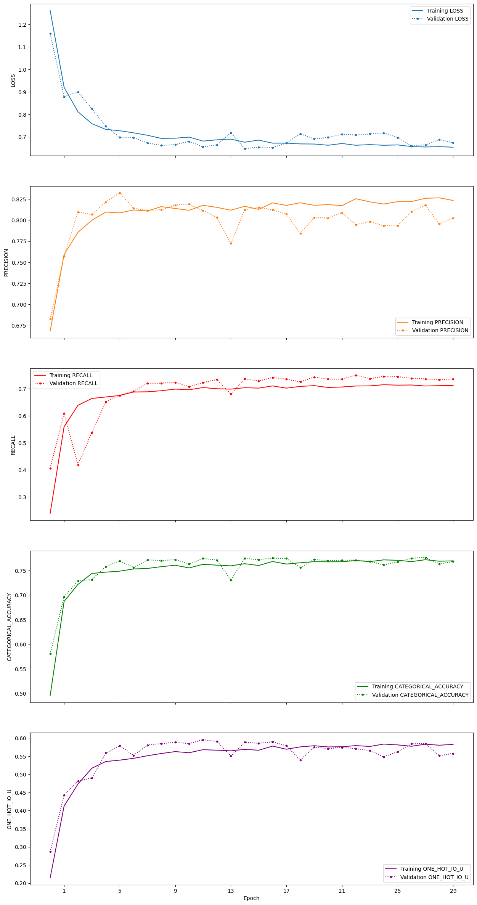
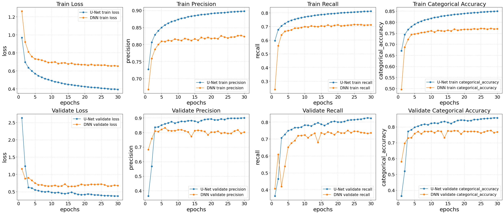

![]()
from google.colab import drive
drive.mount("/content/drive")2 Semantic Segmentation (Crop Mapping)
2.1 Rice mapping in Bhutan with U-Net using high resolution satellite imagery
This notebook is also available in this github repo: https://github.com/SERVIR/servir-aces. Navigate to the notebooks folder.
2.2 Setup environment
!pip install servir-acesCollecting servir-aces
Downloading servir_aces-0.0.14-py2.py3-none-any.whl (32 kB)
Requirement already satisfied: numpy in /usr/local/lib/python3.10/dist-packages (from servir-aces) (1.25.2)
Requirement already satisfied: tensorflow>=2.9.3 in /usr/local/lib/python3.10/dist-packages (from servir-aces) (2.15.0)
Requirement already satisfied: earthengine-api in /usr/local/lib/python3.10/dist-packages (from servir-aces) (0.1.399)
Collecting python-dotenv>=1.0.0 (from servir-aces)
Downloading python_dotenv-1.0.1-py3-none-any.whl (19 kB)
Requirement already satisfied: matplotlib in /usr/local/lib/python3.10/dist-packages (from servir-aces) (3.7.1)
Requirement already satisfied: absl-py>=1.0.0 in /usr/local/lib/python3.10/dist-packages (from tensorflow>=2.9.3->servir-aces) (1.4.0)
Requirement already satisfied: astunparse>=1.6.0 in /usr/local/lib/python3.10/dist-packages (from tensorflow>=2.9.3->servir-aces) (1.6.3)
Requirement already satisfied: flatbuffers>=23.5.26 in /usr/local/lib/python3.10/dist-packages (from tensorflow>=2.9.3->servir-aces) (24.3.25)
Requirement already satisfied: gast!=0.5.0,!=0.5.1,!=0.5.2,>=0.2.1 in /usr/local/lib/python3.10/dist-packages (from tensorflow>=2.9.3->servir-aces) (0.5.4)
Requirement already satisfied: google-pasta>=0.1.1 in /usr/local/lib/python3.10/dist-packages (from tensorflow>=2.9.3->servir-aces) (0.2.0)
Requirement already satisfied: h5py>=2.9.0 in /usr/local/lib/python3.10/dist-packages (from tensorflow>=2.9.3->servir-aces) (3.9.0)
Requirement already satisfied: libclang>=13.0.0 in /usr/local/lib/python3.10/dist-packages (from tensorflow>=2.9.3->servir-aces) (18.1.1)
Requirement already satisfied: ml-dtypes~=0.2.0 in /usr/local/lib/python3.10/dist-packages (from tensorflow>=2.9.3->servir-aces) (0.2.0)
Requirement already satisfied: opt-einsum>=2.3.2 in /usr/local/lib/python3.10/dist-packages (from tensorflow>=2.9.3->servir-aces) (3.3.0)
Requirement already satisfied: packaging in /usr/local/lib/python3.10/dist-packages (from tensorflow>=2.9.3->servir-aces) (24.0)
Requirement already satisfied: protobuf!=4.21.0,!=4.21.1,!=4.21.2,!=4.21.3,!=4.21.4,!=4.21.5,<5.0.0dev,>=3.20.3 in /usr/local/lib/python3.10/dist-packages (from tensorflow>=2.9.3->servir-aces) (3.20.3)
Requirement already satisfied: setuptools in /usr/local/lib/python3.10/dist-packages (from tensorflow>=2.9.3->servir-aces) (67.7.2)
Requirement already satisfied: six>=1.12.0 in /usr/local/lib/python3.10/dist-packages (from tensorflow>=2.9.3->servir-aces) (1.16.0)
Requirement already satisfied: termcolor>=1.1.0 in /usr/local/lib/python3.10/dist-packages (from tensorflow>=2.9.3->servir-aces) (2.4.0)
Requirement already satisfied: typing-extensions>=3.6.6 in /usr/local/lib/python3.10/dist-packages (from tensorflow>=2.9.3->servir-aces) (4.11.0)
Requirement already satisfied: wrapt<1.15,>=1.11.0 in /usr/local/lib/python3.10/dist-packages (from tensorflow>=2.9.3->servir-aces) (1.14.1)
Requirement already satisfied: tensorflow-io-gcs-filesystem>=0.23.1 in /usr/local/lib/python3.10/dist-packages (from tensorflow>=2.9.3->servir-aces) (0.36.0)
Requirement already satisfied: grpcio<2.0,>=1.24.3 in /usr/local/lib/python3.10/dist-packages (from tensorflow>=2.9.3->servir-aces) (1.62.2)
Requirement already satisfied: tensorboard<2.16,>=2.15 in /usr/local/lib/python3.10/dist-packages (from tensorflow>=2.9.3->servir-aces) (2.15.2)
Requirement already satisfied: tensorflow-estimator<2.16,>=2.15.0 in /usr/local/lib/python3.10/dist-packages (from tensorflow>=2.9.3->servir-aces) (2.15.0)
Requirement already satisfied: keras<2.16,>=2.15.0 in /usr/local/lib/python3.10/dist-packages (from tensorflow>=2.9.3->servir-aces) (2.15.0)
Requirement already satisfied: google-cloud-storage in /usr/local/lib/python3.10/dist-packages (from earthengine-api->servir-aces) (2.8.0)
Requirement already satisfied: google-api-python-client>=1.12.1 in /usr/local/lib/python3.10/dist-packages (from earthengine-api->servir-aces) (2.84.0)
Requirement already satisfied: google-auth>=1.4.1 in /usr/local/lib/python3.10/dist-packages (from earthengine-api->servir-aces) (2.27.0)
Requirement already satisfied: google-auth-httplib2>=0.0.3 in /usr/local/lib/python3.10/dist-packages (from earthengine-api->servir-aces) (0.1.1)
Requirement already satisfied: httplib2<1dev,>=0.9.2 in /usr/local/lib/python3.10/dist-packages (from earthengine-api->servir-aces) (0.22.0)
Requirement already satisfied: requests in /usr/local/lib/python3.10/dist-packages (from earthengine-api->servir-aces) (2.31.0)
Requirement already satisfied: contourpy>=1.0.1 in /usr/local/lib/python3.10/dist-packages (from matplotlib->servir-aces) (1.2.1)
Requirement already satisfied: cycler>=0.10 in /usr/local/lib/python3.10/dist-packages (from matplotlib->servir-aces) (0.12.1)
Requirement already satisfied: fonttools>=4.22.0 in /usr/local/lib/python3.10/dist-packages (from matplotlib->servir-aces) (4.51.0)
Requirement already satisfied: kiwisolver>=1.0.1 in /usr/local/lib/python3.10/dist-packages (from matplotlib->servir-aces) (1.4.5)
Requirement already satisfied: pillow>=6.2.0 in /usr/local/lib/python3.10/dist-packages (from matplotlib->servir-aces) (9.4.0)
Requirement already satisfied: pyparsing>=2.3.1 in /usr/local/lib/python3.10/dist-packages (from matplotlib->servir-aces) (3.1.2)
Requirement already satisfied: python-dateutil>=2.7 in /usr/local/lib/python3.10/dist-packages (from matplotlib->servir-aces) (2.8.2)
Requirement already satisfied: wheel<1.0,>=0.23.0 in /usr/local/lib/python3.10/dist-packages (from astunparse>=1.6.0->tensorflow>=2.9.3->servir-aces) (0.43.0)
Requirement already satisfied: google-api-core!=2.0.*,!=2.1.*,!=2.2.*,!=2.3.0,<3.0.0dev,>=1.31.5 in /usr/local/lib/python3.10/dist-packages (from google-api-python-client>=1.12.1->earthengine-api->servir-aces) (2.11.1)
Requirement already satisfied: uritemplate<5,>=3.0.1 in /usr/local/lib/python3.10/dist-packages (from google-api-python-client>=1.12.1->earthengine-api->servir-aces) (4.1.1)
Requirement already satisfied: cachetools<6.0,>=2.0.0 in /usr/local/lib/python3.10/dist-packages (from google-auth>=1.4.1->earthengine-api->servir-aces) (5.3.3)
Requirement already satisfied: pyasn1-modules>=0.2.1 in /usr/local/lib/python3.10/dist-packages (from google-auth>=1.4.1->earthengine-api->servir-aces) (0.4.0)
Requirement already satisfied: rsa<5,>=3.1.4 in /usr/local/lib/python3.10/dist-packages (from google-auth>=1.4.1->earthengine-api->servir-aces) (4.9)
Requirement already satisfied: google-auth-oauthlib<2,>=0.5 in /usr/local/lib/python3.10/dist-packages (from tensorboard<2.16,>=2.15->tensorflow>=2.9.3->servir-aces) (1.2.0)
Requirement already satisfied: markdown>=2.6.8 in /usr/local/lib/python3.10/dist-packages (from tensorboard<2.16,>=2.15->tensorflow>=2.9.3->servir-aces) (3.6)
Requirement already satisfied: tensorboard-data-server<0.8.0,>=0.7.0 in /usr/local/lib/python3.10/dist-packages (from tensorboard<2.16,>=2.15->tensorflow>=2.9.3->servir-aces) (0.7.2)
Requirement already satisfied: werkzeug>=1.0.1 in /usr/local/lib/python3.10/dist-packages (from tensorboard<2.16,>=2.15->tensorflow>=2.9.3->servir-aces) (3.0.2)
Requirement already satisfied: charset-normalizer<4,>=2 in /usr/local/lib/python3.10/dist-packages (from requests->earthengine-api->servir-aces) (3.3.2)
Requirement already satisfied: idna<4,>=2.5 in /usr/local/lib/python3.10/dist-packages (from requests->earthengine-api->servir-aces) (3.7)
Requirement already satisfied: urllib3<3,>=1.21.1 in /usr/local/lib/python3.10/dist-packages (from requests->earthengine-api->servir-aces) (2.0.7)
Requirement already satisfied: certifi>=2017.4.17 in /usr/local/lib/python3.10/dist-packages (from requests->earthengine-api->servir-aces) (2024.2.2)
Requirement already satisfied: google-cloud-core<3.0dev,>=2.3.0 in /usr/local/lib/python3.10/dist-packages (from google-cloud-storage->earthengine-api->servir-aces) (2.3.3)
Requirement already satisfied: google-resumable-media>=2.3.2 in /usr/local/lib/python3.10/dist-packages (from google-cloud-storage->earthengine-api->servir-aces) (2.7.0)
Requirement already satisfied: googleapis-common-protos<2.0.dev0,>=1.56.2 in /usr/local/lib/python3.10/dist-packages (from google-api-core!=2.0.*,!=2.1.*,!=2.2.*,!=2.3.0,<3.0.0dev,>=1.31.5->google-api-python-client>=1.12.1->earthengine-api->servir-aces) (1.63.0)
Requirement already satisfied: requests-oauthlib>=0.7.0 in /usr/local/lib/python3.10/dist-packages (from google-auth-oauthlib<2,>=0.5->tensorboard<2.16,>=2.15->tensorflow>=2.9.3->servir-aces) (1.3.1)
Requirement already satisfied: google-crc32c<2.0dev,>=1.0 in /usr/local/lib/python3.10/dist-packages (from google-resumable-media>=2.3.2->google-cloud-storage->earthengine-api->servir-aces) (1.5.0)
Requirement already satisfied: pyasn1<0.7.0,>=0.4.6 in /usr/local/lib/python3.10/dist-packages (from pyasn1-modules>=0.2.1->google-auth>=1.4.1->earthengine-api->servir-aces) (0.6.0)
Requirement already satisfied: MarkupSafe>=2.1.1 in /usr/local/lib/python3.10/dist-packages (from werkzeug>=1.0.1->tensorboard<2.16,>=2.15->tensorflow>=2.9.3->servir-aces) (2.1.5)
Requirement already satisfied: oauthlib>=3.0.0 in /usr/local/lib/python3.10/dist-packages (from requests-oauthlib>=0.7.0->google-auth-oauthlib<2,>=0.5->tensorboard<2.16,>=2.15->tensorflow>=2.9.3->servir-aces) (3.2.2)
Installing collected packages: python-dotenv, servir-aces
Successfully installed python-dotenv-1.0.1 servir-aces-0.0.14# !git clone https://github.com/SERVIR/servir-acesCloning into 'servir-aces'...
remote: Enumerating objects: 740, done.
remote: Counting objects: 100% (116/116), done.
remote: Compressing objects: 100% (78/78), done.
remote: Total 740 (delta 46), reused 68 (delta 38), pack-reused 624
Receiving objects: 100% (740/740), 5.07 MiB | 16.12 MiB/s, done.
Resolving deltas: 100% (468/468), done.2.2.1 Download datasets
For this chapter, we have already prepared and exported the training datasets. They can be found at the google cloud storage and we will use gsutil to get the dataset in our workspace. The dataset has training, testing, and validation subdirectory. Let’s start by downloading these datasets in our workspace.
If you’re looking to produce your own datasets, you can follow this notebook which was used to produce these training, testing, and validation datasets provided in this notebook.
!mkdir -p content/datasets!gsutil -m cp -r gs://dl-book/chapter-1 content/datasets/If you experience problems with multiprocessing on MacOS, they might be related to https://bugs.python.org/issue33725. You can disable multiprocessing by editing your .boto config or by adding the following flag to your command: `-o "GSUtil:parallel_process_count=1"`. Note that multithreading is still available even if you disable multiprocessing.
Copying gs://dl-book/chapter-1/.DS_Store...
Copying gs://dl-book/chapter-1/dnn_planet_wo_indices/testing/testing.tfrecord.gz...
Copying gs://dl-book/chapter-1/dnn_planet_wo_indices/training/training.tfrecord.gz...
Copying gs://dl-book/chapter-1/dnn_planet_wo_indices/validation/validation.tfrecord.gz...
Copying gs://dl-book/chapter-1/images/image_202100000.tfrecord.gz...
Copying gs://dl-book/chapter-1/images/image_202100001.tfrecord.gz...
Copying gs://dl-book/chapter-1/images/image_202100002.tfrecord.gz...
Copying gs://dl-book/chapter-1/images/image_202100003.tfrecord.gz...
Copying gs://dl-book/chapter-1/models/dnn_v1/config.env...
Copying gs://dl-book/chapter-1/images/image_202100004.tfrecord.gz...
Copying gs://dl-book/chapter-1/images/image_202100005.tfrecord.gz...
Copying gs://dl-book/chapter-1/images/image_2021mixer.json...
Copying gs://dl-book/chapter-1/models/dnn_v1/aces/keras_metadata.pb...
Copying gs://dl-book/chapter-1/models/dnn_v1/aces/fingerprint.pb...
Copying gs://dl-book/chapter-1/models/dnn_v1/aces/saved_model.pb...
Copying gs://dl-book/chapter-1/models/dnn_v1/aces/variables/variables.data-00000-of-00001...
Copying gs://dl-book/chapter-1/models/dnn_v1/aces/variables/variables.index...
Copying gs://dl-book/chapter-1/models/dnn_v1/config.json...
Copying gs://dl-book/chapter-1/models/dnn_v1/evaluation.txt...
Copying gs://dl-book/chapter-1/models/dnn_v1/logs/train/events.out.tfevents.1713307528.b5c4c6e407b9.190.2.v2...
Copying gs://dl-book/chapter-1/models/dnn_v1/logs/validation/events.out.tfevents.1713307537.b5c4c6e407b9.190.3.v2...
Copying gs://dl-book/chapter-1/models/dnn_v1/model.png...
Copying gs://dl-book/chapter-1/models/dnn_v1/model.txt...
Copying gs://dl-book/chapter-1/models/dnn_v1/modelCheckpoint/fingerprint.pb...
Copying gs://dl-book/chapter-1/models/dnn_v1/modelCheckpoint/variables/variables.data-00000-of-00001...
Copying gs://dl-book/chapter-1/models/dnn_v1/modelCheckpoint/keras_metadata.pb...
Copying gs://dl-book/chapter-1/models/unet_v1/aces/fingerprint.pb...
Copying gs://dl-book/chapter-1/models/unet_v1/aces/keras_metadata.pb...
Copying gs://dl-book/chapter-1/models/dnn_v1/model.pkl...
Copying gs://dl-book/chapter-1/models/dnn_v1/modelCheckpoint/variables/variables.index...
Copying gs://dl-book/chapter-1/models/dnn_v1/parameters.txt...
Copying gs://dl-book/chapter-1/models/dnn_v1/prediction/prediction_dnn_v1.TFRecord...
Copying gs://dl-book/chapter-1/models/unet_v1/model.pkl...
Copying gs://dl-book/chapter-1/models/dnn_v1/trained-model/fingerprint.pb...
Copying gs://dl-book/chapter-1/models/dnn_v1/modelCheckpoint/saved_model.pb...
==> NOTE: You are downloading one or more large file(s), which would
run significantly faster if you enabled sliced object downloads. This
feature is enabled by default but requires that compiled crcmod be
installed (see "gsutil help crcmod").
Copying gs://dl-book/chapter-1/models/unet_v1/aces/saved_model.pb...
Copying gs://dl-book/chapter-1/models/dnn_v1/trained-model/keras_metadata.pb...
Copying gs://dl-book/chapter-1/models/dnn_v1/trained-model/saved_model.pb...
Copying gs://dl-book/chapter-1/models/dnn_v1/trained-model/variables/variables.index...
Copying gs://dl-book/chapter-1/models/dnn_v1/trained-model/variables/variables.data-00000-of-00001...
Copying gs://dl-book/chapter-1/models/dnn_v1/training.png...
Copying gs://dl-book/chapter-1/models/unet_v1/aces/variables/variables.data-00000-of-00001...
Copying gs://dl-book/chapter-1/models/unet_v1/model.png...
Copying gs://dl-book/chapter-1/models/unet_v1/logs/train/events.out.tfevents.1713299324.b5c4c6e407b9.190.0.v2...
Copying gs://dl-book/chapter-1/models/unet_v1/config.env...
Copying gs://dl-book/chapter-1/models/unet_v1/evaluation.txt...
Copying gs://dl-book/chapter-1/models/unet_v1/config.json...
Copying gs://dl-book/chapter-1/models/unet_v1/model.txt...
Copying gs://dl-book/chapter-1/models/unet_v1/logs/validation/events.out.tfevents.1713299558.b5c4c6e407b9.190.1.v2...
Copying gs://dl-book/chapter-1/models/unet_v1/aces/variables/variables.index...
Copying gs://dl-book/chapter-1/models/unet_v1/modelCheckpoint/fingerprint.pb...
Copying gs://dl-book/chapter-1/models/unet_v1/modelCheckpoint/keras_metadata.pb...
Copying gs://dl-book/chapter-1/models/unet_v1/modelCheckpoint/saved_model.pb...
Copying gs://dl-book/chapter-1/models/unet_v1/modelCheckpoint/variables/variables.data-00000-of-00001...
Copying gs://dl-book/chapter-1/models/unet_v1/modelCheckpoint/variables/variables.index...
Copying gs://dl-book/chapter-1/models/unet_v1/prediction/prediction_unet_v1.TFRecord...
Copying gs://dl-book/chapter-1/models/unet_v1/parameters.txt...
Copying gs://dl-book/chapter-1/models/unet_v1/trained-model/fingerprint.pb...
Copying gs://dl-book/chapter-1/models/unet_v1/trained-model/keras_metadata.pb...
Copying gs://dl-book/chapter-1/models/unet_v1/trained-model/saved_model.pb...
Copying gs://dl-book/chapter-1/models/unet_v1/trained-model/variables/variables.data-00000-of-00001...
Copying gs://dl-book/chapter-1/models/unet_v1/trained-model/variables/variables.index...
Copying gs://dl-book/chapter-1/models/unet_v1/training.png...
Copying gs://dl-book/chapter-1/prediction/prediction_dnn_v1.TFRecord...
Copying gs://dl-book/chapter-1/prediction/prediction_unet_v1.TFRecord...
Copying gs://dl-book/chapter-1/training_data/testing_10/testing__256x256-00000-of-00008.tfrecord.gz...
Copying gs://dl-book/chapter-1/training_data/testing_10/testing__256x256-00001-of-00008.tfrecord.gz...
Copying gs://dl-book/chapter-1/training_data/testing_10/testing__256x256-00003-of-00008.tfrecord.gz...
Copying gs://dl-book/chapter-1/training_data/testing_10/testing__256x256-00002-of-00008.tfrecord.gz...
Copying gs://dl-book/chapter-1/training_data/testing_10/testing__256x256-00004-of-00008.tfrecord.gz...
Copying gs://dl-book/chapter-1/training_data/testing_10/testing__256x256-00005-of-00008.tfrecord.gz...
Copying gs://dl-book/chapter-1/training_data/testing_10/testing__256x256-00006-of-00008.tfrecord.gz...
Copying gs://dl-book/chapter-1/training_data/testing_10/testing__256x256-00007-of-00008.tfrecord.gz...
Copying gs://dl-book/chapter-1/unet_256x256_planet_wo_indices/testing/testing-00000-of-00038.tfrecord.gz...
Copying gs://dl-book/chapter-1/unet_256x256_planet_wo_indices/testing/testing-00001-of-00038.tfrecord.gz...
Copying gs://dl-book/chapter-1/unet_256x256_planet_wo_indices/testing/testing-00002-of-00038.tfrecord.gz...
Copying gs://dl-book/chapter-1/unet_256x256_planet_wo_indices/testing/testing-00003-of-00038.tfrecord.gz...
Copying gs://dl-book/chapter-1/unet_256x256_planet_wo_indices/testing/testing-00004-of-00038.tfrecord.gz...
Copying gs://dl-book/chapter-1/unet_256x256_planet_wo_indices/testing/testing-00005-of-00038.tfrecord.gz...
Copying gs://dl-book/chapter-1/unet_256x256_planet_wo_indices/testing/testing-00006-of-00038.tfrecord.gz...
Copying gs://dl-book/chapter-1/unet_256x256_planet_wo_indices/testing/testing-00007-of-00038.tfrecord.gz...
Copying gs://dl-book/chapter-1/unet_256x256_planet_wo_indices/testing/testing-00008-of-00038.tfrecord.gz...
Copying gs://dl-book/chapter-1/unet_256x256_planet_wo_indices/testing/testing-00009-of-00038.tfrecord.gz...
Copying gs://dl-book/chapter-1/unet_256x256_planet_wo_indices/testing/testing-00010-of-00038.tfrecord.gz...
Copying gs://dl-book/chapter-1/unet_256x256_planet_wo_indices/testing/testing-00011-of-00038.tfrecord.gz...
Copying gs://dl-book/chapter-1/unet_256x256_planet_wo_indices/testing/testing-00012-of-00038.tfrecord.gz...
Copying gs://dl-book/chapter-1/unet_256x256_planet_wo_indices/testing/testing-00013-of-00038.tfrecord.gz...
Copying gs://dl-book/chapter-1/unet_256x256_planet_wo_indices/testing/testing-00014-of-00038.tfrecord.gz...
Copying gs://dl-book/chapter-1/unet_256x256_planet_wo_indices/testing/testing-00015-of-00038.tfrecord.gz...
Copying gs://dl-book/chapter-1/unet_256x256_planet_wo_indices/testing/testing-00016-of-00038.tfrecord.gz...
Copying gs://dl-book/chapter-1/unet_256x256_planet_wo_indices/testing/testing-00017-of-00038.tfrecord.gz...
Copying gs://dl-book/chapter-1/unet_256x256_planet_wo_indices/testing/testing-00018-of-00038.tfrecord.gz...
Copying gs://dl-book/chapter-1/unet_256x256_planet_wo_indices/testing/testing-00019-of-00038.tfrecord.gz...
Copying gs://dl-book/chapter-1/unet_256x256_planet_wo_indices/testing/testing-00020-of-00038.tfrecord.gz...
Copying gs://dl-book/chapter-1/unet_256x256_planet_wo_indices/testing/testing-00021-of-00038.tfrecord.gz...
Copying gs://dl-book/chapter-1/unet_256x256_planet_wo_indices/testing/testing-00022-of-00038.tfrecord.gz...
Copying gs://dl-book/chapter-1/unet_256x256_planet_wo_indices/testing/testing-00023-of-00038.tfrecord.gz...
Copying gs://dl-book/chapter-1/unet_256x256_planet_wo_indices/testing/testing-00024-of-00038.tfrecord.gz...
Copying gs://dl-book/chapter-1/unet_256x256_planet_wo_indices/testing/testing-00025-of-00038.tfrecord.gz...
Copying gs://dl-book/chapter-1/unet_256x256_planet_wo_indices/testing/testing-00026-of-00038.tfrecord.gz...
Copying gs://dl-book/chapter-1/unet_256x256_planet_wo_indices/testing/testing-00027-of-00038.tfrecord.gz...
Copying gs://dl-book/chapter-1/unet_256x256_planet_wo_indices/testing/testing-00028-of-00038.tfrecord.gz...
Copying gs://dl-book/chapter-1/unet_256x256_planet_wo_indices/testing/testing-00029-of-00038.tfrecord.gz...
Copying gs://dl-book/chapter-1/unet_256x256_planet_wo_indices/testing/testing-00030-of-00038.tfrecord.gz...
Copying gs://dl-book/chapter-1/unet_256x256_planet_wo_indices/testing/testing-00031-of-00038.tfrecord.gz...
Copying gs://dl-book/chapter-1/unet_256x256_planet_wo_indices/testing/testing-00032-of-00038.tfrecord.gz...
Copying gs://dl-book/chapter-1/unet_256x256_planet_wo_indices/testing/testing-00033-of-00038.tfrecord.gz...
Copying gs://dl-book/chapter-1/unet_256x256_planet_wo_indices/testing/testing-00034-of-00038.tfrecord.gz...
Copying gs://dl-book/chapter-1/unet_256x256_planet_wo_indices/testing/testing-00035-of-00038.tfrecord.gz...
Copying gs://dl-book/chapter-1/unet_256x256_planet_wo_indices/testing/testing-00036-of-00038.tfrecord.gz...
Copying gs://dl-book/chapter-1/unet_256x256_planet_wo_indices/testing/testing-00037-of-00038.tfrecord.gz...
Copying gs://dl-book/chapter-1/unet_256x256_planet_wo_indices/training/training-00000-of-00038.tfrecord.gz...
Copying gs://dl-book/chapter-1/unet_256x256_planet_wo_indices/training/training-00001-of-00038.tfrecord.gz...
Copying gs://dl-book/chapter-1/unet_256x256_planet_wo_indices/training/training-00002-of-00038.tfrecord.gz...
Copying gs://dl-book/chapter-1/unet_256x256_planet_wo_indices/training/training-00003-of-00038.tfrecord.gz...
Copying gs://dl-book/chapter-1/unet_256x256_planet_wo_indices/training/training-00004-of-00038.tfrecord.gz...
Copying gs://dl-book/chapter-1/unet_256x256_planet_wo_indices/training/training-00005-of-00038.tfrecord.gz...
Copying gs://dl-book/chapter-1/unet_256x256_planet_wo_indices/training/training-00006-of-00038.tfrecord.gz...
Copying gs://dl-book/chapter-1/unet_256x256_planet_wo_indices/training/training-00007-of-00038.tfrecord.gz...
Copying gs://dl-book/chapter-1/unet_256x256_planet_wo_indices/training/training-00008-of-00038.tfrecord.gz...
Copying gs://dl-book/chapter-1/unet_256x256_planet_wo_indices/training/training-00009-of-00038.tfrecord.gz...
Copying gs://dl-book/chapter-1/unet_256x256_planet_wo_indices/training/training-00010-of-00038.tfrecord.gz...
Copying gs://dl-book/chapter-1/unet_256x256_planet_wo_indices/training/training-00011-of-00038.tfrecord.gz...
Copying gs://dl-book/chapter-1/unet_256x256_planet_wo_indices/training/training-00012-of-00038.tfrecord.gz...
Copying gs://dl-book/chapter-1/unet_256x256_planet_wo_indices/training/training-00013-of-00038.tfrecord.gz...
Copying gs://dl-book/chapter-1/unet_256x256_planet_wo_indices/training/training-00014-of-00038.tfrecord.gz...
Copying gs://dl-book/chapter-1/unet_256x256_planet_wo_indices/training/training-00015-of-00038.tfrecord.gz...
Copying gs://dl-book/chapter-1/unet_256x256_planet_wo_indices/training/training-00016-of-00038.tfrecord.gz...
Copying gs://dl-book/chapter-1/unet_256x256_planet_wo_indices/training/training-00017-of-00038.tfrecord.gz...
Copying gs://dl-book/chapter-1/unet_256x256_planet_wo_indices/training/training-00018-of-00038.tfrecord.gz...
Copying gs://dl-book/chapter-1/unet_256x256_planet_wo_indices/training/training-00019-of-00038.tfrecord.gz...
Copying gs://dl-book/chapter-1/unet_256x256_planet_wo_indices/training/training-00020-of-00038.tfrecord.gz...
Copying gs://dl-book/chapter-1/unet_256x256_planet_wo_indices/training/training-00021-of-00038.tfrecord.gz...
Copying gs://dl-book/chapter-1/unet_256x256_planet_wo_indices/training/training-00022-of-00038.tfrecord.gz...
Copying gs://dl-book/chapter-1/unet_256x256_planet_wo_indices/training/training-00023-of-00038.tfrecord.gz...
Copying gs://dl-book/chapter-1/unet_256x256_planet_wo_indices/training/training-00024-of-00038.tfrecord.gz...
Copying gs://dl-book/chapter-1/unet_256x256_planet_wo_indices/training/training-00025-of-00038.tfrecord.gz...
Copying gs://dl-book/chapter-1/unet_256x256_planet_wo_indices/training/training-00026-of-00038.tfrecord.gz...
Copying gs://dl-book/chapter-1/unet_256x256_planet_wo_indices/training/training-00027-of-00038.tfrecord.gz...
Copying gs://dl-book/chapter-1/unet_256x256_planet_wo_indices/training/training-00028-of-00038.tfrecord.gz...
Copying gs://dl-book/chapter-1/unet_256x256_planet_wo_indices/training/training-00029-of-00038.tfrecord.gz...
Copying gs://dl-book/chapter-1/unet_256x256_planet_wo_indices/training/training-00030-of-00038.tfrecord.gz...
Copying gs://dl-book/chapter-1/unet_256x256_planet_wo_indices/training/training-00031-of-00038.tfrecord.gz...
Copying gs://dl-book/chapter-1/unet_256x256_planet_wo_indices/training/training-00032-of-00038.tfrecord.gz...
Copying gs://dl-book/chapter-1/unet_256x256_planet_wo_indices/training/training-00033-of-00038.tfrecord.gz...
Copying gs://dl-book/chapter-1/unet_256x256_planet_wo_indices/training/training-00034-of-00038.tfrecord.gz...
Copying gs://dl-book/chapter-1/unet_256x256_planet_wo_indices/training/training-00035-of-00038.tfrecord.gz...
Copying gs://dl-book/chapter-1/unet_256x256_planet_wo_indices/training/training-00036-of-00038.tfrecord.gz...
Copying gs://dl-book/chapter-1/unet_256x256_planet_wo_indices/training/training-00037-of-00038.tfrecord.gz...
Copying gs://dl-book/chapter-1/unet_256x256_planet_wo_indices/validation/validation-00000-of-00038.tfrecord.gz...
Copying gs://dl-book/chapter-1/unet_256x256_planet_wo_indices/validation/validation-00001-of-00038.tfrecord.gz...
Copying gs://dl-book/chapter-1/unet_256x256_planet_wo_indices/validation/validation-00002-of-00038.tfrecord.gz...
Copying gs://dl-book/chapter-1/unet_256x256_planet_wo_indices/validation/validation-00003-of-00038.tfrecord.gz...
Copying gs://dl-book/chapter-1/unet_256x256_planet_wo_indices/validation/validation-00004-of-00038.tfrecord.gz...
Copying gs://dl-book/chapter-1/unet_256x256_planet_wo_indices/validation/validation-00005-of-00038.tfrecord.gz...
Copying gs://dl-book/chapter-1/unet_256x256_planet_wo_indices/validation/validation-00006-of-00038.tfrecord.gz...
Copying gs://dl-book/chapter-1/unet_256x256_planet_wo_indices/validation/validation-00007-of-00038.tfrecord.gz...
Copying gs://dl-book/chapter-1/unet_256x256_planet_wo_indices/validation/validation-00008-of-00038.tfrecord.gz...
Copying gs://dl-book/chapter-1/unet_256x256_planet_wo_indices/validation/validation-00009-of-00038.tfrecord.gz...
Copying gs://dl-book/chapter-1/unet_256x256_planet_wo_indices/validation/validation-00010-of-00038.tfrecord.gz...
Copying gs://dl-book/chapter-1/unet_256x256_planet_wo_indices/validation/validation-00011-of-00038.tfrecord.gz...
Copying gs://dl-book/chapter-1/unet_256x256_planet_wo_indices/validation/validation-00012-of-00038.tfrecord.gz...
Copying gs://dl-book/chapter-1/unet_256x256_planet_wo_indices/validation/validation-00013-of-00038.tfrecord.gz...
Copying gs://dl-book/chapter-1/unet_256x256_planet_wo_indices/validation/validation-00014-of-00038.tfrecord.gz...
Copying gs://dl-book/chapter-1/unet_256x256_planet_wo_indices/validation/validation-00015-of-00038.tfrecord.gz...
Copying gs://dl-book/chapter-1/unet_256x256_planet_wo_indices/validation/validation-00016-of-00038.tfrecord.gz...
Copying gs://dl-book/chapter-1/unet_256x256_planet_wo_indices/validation/validation-00017-of-00038.tfrecord.gz...
Copying gs://dl-book/chapter-1/unet_256x256_planet_wo_indices/validation/validation-00018-of-00038.tfrecord.gz...
Copying gs://dl-book/chapter-1/unet_256x256_planet_wo_indices/validation/validation-00019-of-00038.tfrecord.gz...
Copying gs://dl-book/chapter-1/unet_256x256_planet_wo_indices/validation/validation-00020-of-00038.tfrecord.gz...
Copying gs://dl-book/chapter-1/unet_256x256_planet_wo_indices/validation/validation-00021-of-00038.tfrecord.gz...
Copying gs://dl-book/chapter-1/unet_256x256_planet_wo_indices/validation/validation-00022-of-00038.tfrecord.gz...
Copying gs://dl-book/chapter-1/unet_256x256_planet_wo_indices/validation/validation-00023-of-00038.tfrecord.gz...
Copying gs://dl-book/chapter-1/unet_256x256_planet_wo_indices/validation/validation-00024-of-00038.tfrecord.gz...
Copying gs://dl-book/chapter-1/unet_256x256_planet_wo_indices/validation/validation-00025-of-00038.tfrecord.gz...
Copying gs://dl-book/chapter-1/unet_256x256_planet_wo_indices/validation/validation-00026-of-00038.tfrecord.gz...
Copying gs://dl-book/chapter-1/unet_256x256_planet_wo_indices/validation/validation-00027-of-00038.tfrecord.gz...
Copying gs://dl-book/chapter-1/unet_256x256_planet_wo_indices/validation/validation-00028-of-00038.tfrecord.gz...
Copying gs://dl-book/chapter-1/unet_256x256_planet_wo_indices/validation/validation-00029-of-00038.tfrecord.gz...
Copying gs://dl-book/chapter-1/unet_256x256_planet_wo_indices/validation/validation-00030-of-00038.tfrecord.gz...
Copying gs://dl-book/chapter-1/unet_256x256_planet_wo_indices/validation/validation-00031-of-00038.tfrecord.gz...
Copying gs://dl-book/chapter-1/unet_256x256_planet_wo_indices/validation/validation-00032-of-00038.tfrecord.gz...
Copying gs://dl-book/chapter-1/unet_256x256_planet_wo_indices/validation/validation-00033-of-00038.tfrecord.gz...
Copying gs://dl-book/chapter-1/unet_256x256_planet_wo_indices/validation/validation-00034-of-00038.tfrecord.gz...
Copying gs://dl-book/chapter-1/unet_256x256_planet_wo_indices/validation/validation-00035-of-00038.tfrecord.gz...
Copying gs://dl-book/chapter-1/unet_256x256_planet_wo_indices/validation/validation-00036-of-00038.tfrecord.gz...
Copying gs://dl-book/chapter-1/unet_256x256_planet_wo_indices/validation/validation-00037-of-00038.tfrecord.gz...
/ [187/192 files][ 16.3 GiB/ 16.3 GiB] 99% Done 43.1 MiB/s ETA 00:00:00 2.2.2 Setup config file variables
Now the repo is downloaded. We will create an environment file file to place point to our training data and customize parameters for the model. To do this, we make a copy of the .env.example file provided.
Under the hood, all the configuration provided via the environment file are parsed as a config object and can be accessed programatically.
Note current version does not expose all the model intracacies through the environment file but future version may include those depending on the need.
!cp servir-aces/.env.example servir-aces/config.envOkay, now we have the config.env file, we will use this to provide our environments and parameters.
Note there are several parameters that can be changed. Let’s start by changing the BASEDIR and OUTPUT_DIR as below.
BASEDIR = "/content/"
OUTPUT_DIR = "/content/drive/MyDrive/Colab Notebooks/DL_Book/Chapter_1/output"We will start by training a U-Net model using the dl-book/chapter-1/unet_256x256_planet_wo_indices dataset inside the dataset folder for this exercise. Let’s go ahead and change our DATADIR in the config.env file as below.
DATADIR = "datasets/unet_256x256_planet_wo_indices"These datasets have RGBN from Planetscope mosiac. Since we are trying to map the rice fields, we use growing season and pre-growing season information. Thus, we have 8 optical bands, namely red_before, green_before, blue_before, nir_before, red_during, green_during, blue_during, and nir_during. In adidition, you can use USE_ELEVATION and USE_S1 config to include the topographic and radar information. Since this datasets have toppgraphic and radar features, so we won’t be settting these config values. Similarly, these datasets are tiled to 256x256 pixels, so let’s also change that.
# For model training, USE_ELEVATION extends FEATURES with "elevation" & "slope"
# USE_S1 extends FEATURES with "vv_asc_before", "vh_asc_before", "vv_asc_during", "vh_asc_during",
# "vv_desc_before", "vh_desc_before", "vv_desc_during", "vh_desc_during"
# In case these are not useful and you have other bands in your training data, you can do set
# USE_ELEVATION and USE_S1 to False and update FEATURES to include needed bands
USE_ELEVATION = False
USE_S1 = False
PATCH_SHAPE = (256, 256)Next, we need to calculate the size of the traiing, testing and validation dataset. For this, we know our size before hand. But aces also provides handful of functions that we can use to calculate this. See this notebook to learn more about how to do it. We will also change the BATCH_SIZE to 32; if you have larger memory available, you can increase the BATCH_SIZE. You can run for longer EPOCHS by changing the EPOCHS paramter; we will keep it to 5 for now.
# Sizes of the training and evaluation datasets.
TRAIN_SIZE = 8531
TEST_SIZE = 1222
VAL_SIZE = 2404
BATCH_SIZE = 32
EPOCHS = 302.2.3 Update the config file programtically
We can also make a dictionary so we can change these config settings programatically.
BASEDIR = "/content/" # @param {type:"string"}
OUTPUT_DIR = "/content/drive/MyDrive/Colab Notebooks/DL_Book/Chapter_1/output" # @param {type:"string"}
DATADIR = "datasets/unet_256x256_planet_wo_indices" # @param {type:"string"}
# PATCH_SHAPE, USE_ELEVATION, USE_S1, TRAIN_SIZE, TEST_SIZE, VAL_SIZE
# BATCH_SIZE, EPOCHS are converted to their appropriate type.
USE_ELEVATION = "False" # @param {type:"string"}
USE_S1 = "False" # @param {type:"string"}
PATCH_SHAPE = "(256, 256)" # @param {type:"string"}
TRAIN_SIZE = "8531" # @param {type:"string"}
TEST_SIZE = "1222" # @param {type:"string"}
VAL_SIZE = "2404" # @param {type:"string"}
BATCH_SIZE = "32" # @param {type:"string"}
EPOCHS = "30" # @param {type:"string"}
MODEL_DIR_NAME = "unet_v1" # @param {type:"string"}unet_config_settings = {
"BASEDIR" : BASEDIR,
"OUTPUT_DIR": OUTPUT_DIR,
"DATADIR": DATADIR,
"USE_ELEVATION": USE_ELEVATION,
"USE_S1": USE_S1,
"PATCH_SHAPE": PATCH_SHAPE,
"TRAIN_SIZE": TRAIN_SIZE,
"TEST_SIZE": TEST_SIZE,
"VAL_SIZE": VAL_SIZE,
"BATCH_SIZE": BATCH_SIZE,
"EPOCHS": EPOCHS,
"MODEL_DIR_NAME": MODEL_DIR_NAME,
}import dotenv
config_file = "servir-aces/config.env"
for config_key in unet_config_settings:
dotenv.set_key(dotenv_path=config_file,
key_to_set=config_key,
value_to_set=unet_config_settings[config_key]
)2.3 U-Net Model
2.3.1 Load config file variables
from aces import Config, DataProcessor, ModelTrainer, EEUtilsLet’s load our config file through the Config class.
unet_config = Config(config_file=config_file)BASEDIR: /content
DATADIR: /content/datasets/unet_256x256_planet_wo_indices
using features: ['red_before', 'green_before', 'blue_before', 'nir_before', 'red_during', 'green_during', 'blue_during', 'nir_during']
using labels: ['class']Most of the config in the config.env is now available via the config instance. Let’s check few of them here.
unet_config.TRAINING_DIR, unet_config.OUTPUT_DIR, unet_config.BATCH_SIZE, unet_config.TRAIN_SIZE(PosixPath('/content/datasets/unet_256x256_planet_wo_indices/training'),
PosixPath('/content/drive/MyDrive/Colab Notebooks/DL_Book/Chapter_1/output'),
32,
8531)2.3.2 Load ModelTrainer class
Next, let’s make an instance of the ModelTrainer object. The ModelTrainer class provides various tools for training, buidling, compiling, and running specified deep learning models.
unet_model_trainer = ModelTrainer(unet_config, seed=42)Using seed: 422.3.3 Train and Save U-Net model
ModelTrainer class provides various functionality. We will use train_model function that helps to train the model using the provided configuration settings.
This method performs the following steps: - Configures memory growth for TensorFlow. - Creates TensorFlow datasets for training, testing, and validation. - Builds and compiles the model. - Prepares the output directory for saving models and results. - Starts the training process. - Evaluates and prints validation metrics. - Saves training parameters, plots, and models.
unet_model_trainer.train_model()****************************************************************************
****************************** Clear Session... ****************************
****************************************************************************
****************************** Configure memory growth... ************************
> Found 1 GPUs
****************************************************************************
****************************** creating datasets... ************************
Loading dataset from /content/datasets/unet_256x256_planet_wo_indices/training/*
randomly transforming data
Loading dataset from /content/datasets/unet_256x256_planet_wo_indices/validation/*
Loading dataset from /content/datasets/unet_256x256_planet_wo_indices/testing/*
Printing dataset info:
Training
inputs: float32 (32, 256, 256, 8)
tf.Tensor(
[[[[0.073075 0.063275 0.0411 ... 0.050625 0.0274 0.23925 ]
[0.084775 0.067375 0.047025 ... 0.057675 0.032075 0.242375]
[0.083625 0.068575 0.045075 ... 0.059275 0.0332 0.2409 ]
...
[0.0702 0.06825 0.04495 ... 0.055025 0.028325 0.26305 ]
[0.064475 0.066 0.043575 ... 0.0524 0.027075 0.26705 ]
[0.0676 0.06355 0.04535 ... 0.05375 0.02875 0.263275]]
[[0.071475 0.062225 0.0388 ... 0.0496 0.025375 0.24155 ]
[0.07815 0.065025 0.044225 ... 0.0545 0.02905 0.24175 ]
[0.086025 0.069125 0.046175 ... 0.05855 0.0326 0.2355 ]
...
[0.060775 0.0627 0.041875 ... 0.051575 0.029725 0.267475]
[0.061375 0.06225 0.04225 ... 0.0513 0.02685 0.268375]
[0.06845 0.064075 0.043925 ... 0.052925 0.028575 0.267975]]
[[0.0677 0.0605 0.038625 ... 0.04835 0.024825 0.236075]
[0.078375 0.0629 0.04215 ... 0.0524 0.02855 0.237375]
[0.0857 0.065725 0.04635 ... 0.05705 0.030975 0.235375]
...
[0.07 0.062775 0.04485 ... 0.053425 0.0292 0.27015 ]
[0.0607 0.060675 0.041175 ... 0.053075 0.026275 0.27025 ]
[0.068 0.0667 0.045375 ... 0.055475 0.029375 0.262725]]
...
[[0.083525 0.06785 0.044125 ... 0.06365 0.0331 0.234825]
[0.097825 0.07235 0.047925 ... 0.06675 0.03365 0.2363 ]
[0.1092 0.082125 0.05385 ... 0.072125 0.036225 0.2486 ]
...
[0.08935 0.088725 0.067575 ... 0.079675 0.042425 0.38085 ]
[0.093725 0.0875 0.06355 ... 0.07565 0.04185 0.344525]
[0.0937 0.089675 0.066775 ... 0.07465 0.043025 0.330925]]
[[0.0893 0.0732 0.04715 ... 0.065 0.0351 0.233525]
[0.091325 0.073425 0.047475 ... 0.0653 0.032675 0.238325]
[0.096775 0.07645 0.051625 ... 0.06875 0.0344 0.252825]
...
[0.0836 0.084875 0.061975 ... 0.07825 0.042875 0.38785 ]
[0.08865 0.083825 0.060675 ... 0.0765 0.042525 0.3522 ]
[0.0909 0.084475 0.061975 ... 0.0769 0.043275 0.342625]]
[[0.092075 0.078 0.050925 ... 0.06565 0.03555 0.235275]
[0.0805 0.0705 0.043325 ... 0.063925 0.03215 0.243875]
[0.086925 0.074025 0.0495 ... 0.067475 0.03345 0.26095 ]
...
[0.081075 0.078725 0.056425 ... 0.07505 0.0398 0.37805 ]
[0.0865 0.079375 0.05845 ... 0.076175 0.0439 0.3619 ]
[0.0886 0.077775 0.057725 ... 0.076175 0.042825 0.3439 ]]]
[[[0.076525 0.0703 0.04595 ... 0.055225 0.028025 0.25075 ]
[0.072025 0.0658 0.0446 ... 0.05555 0.02795 0.24755 ]
[0.0669 0.06225 0.038125 ... 0.05245 0.027125 0.241425]
...
[0.054175 0.050575 0.029475 ... 0.04845 0.022375 0.23045 ]
[0.05465 0.052375 0.031125 ... 0.04935 0.024375 0.2282 ]
[0.052525 0.052725 0.029275 ... 0.048325 0.02325 0.229475]]
[[0.0784 0.065975 0.0441 ... 0.0594 0.031425 0.241175]
[0.075475 0.066225 0.044975 ... 0.05505 0.02915 0.2405 ]
[0.073375 0.063225 0.044475 ... 0.05435 0.029375 0.243575]
...
[0.047325 0.05035 0.027125 ... 0.04535 0.022275 0.2235 ]
[0.046475 0.051075 0.026425 ... 0.047025 0.021025 0.2348 ]
[0.04295 0.050275 0.02575 ... 0.044525 0.01955 0.240875]]
[[0.065825 0.0619 0.04045 ... 0.053225 0.026425 0.236775]
[0.07745 0.062725 0.040725 ... 0.0573 0.030725 0.2439 ]
[0.075525 0.063775 0.0434 ... 0.05595 0.030125 0.25005 ]
...
[0.046675 0.048325 0.02605 ... 0.0475 0.0219 0.23165 ]
[0.046825 0.04955 0.026425 ... 0.0471 0.02055 0.243125]
[0.04435 0.0498 0.0253 ... 0.04675 0.020775 0.239925]]
...
[[0.028025 0.041275 0.01945 ... 0.039375 0.015675 0.22205 ]
[0.0245 0.040675 0.018025 ... 0.039575 0.016475 0.2187 ]
[0.02185 0.03435 0.01665 ... 0.034025 0.015 0.20335 ]
...
[0.1155 0.09395 0.0714 ... 0.058625 0.0275 0.335675]
[0.117225 0.09435 0.0699 ... 0.05885 0.028175 0.34795 ]
[0.1168 0.093275 0.06865 ... 0.0585 0.02895 0.353275]]
[[0.032025 0.04075 0.020675 ... 0.04025 0.015525 0.2328 ]
[0.024525 0.038175 0.018025 ... 0.03785 0.015075 0.21255 ]
[0.0227 0.03625 0.016425 ... 0.035 0.015075 0.204675]
...
[0.11625 0.093825 0.071275 ... 0.058625 0.02685 0.34765 ]
[0.115325 0.092175 0.06915 ... 0.05855 0.02745 0.3572 ]
[0.1143 0.091225 0.067325 ... 0.05835 0.028925 0.357825]]
[[0.033325 0.04015 0.0212 ... 0.037875 0.015575 0.220525]
[0.027225 0.038525 0.01925 ... 0.03625 0.014825 0.207775]
[0.02625 0.03785 0.01885 ... 0.035675 0.015175 0.209825]
...
[0.1132 0.09225 0.0699 ... 0.057875 0.027175 0.352875]
[0.1116 0.090575 0.0685 ... 0.0585 0.027325 0.36045 ]
[0.110325 0.089725 0.06665 ... 0.059425 0.02975 0.35485 ]]]
[[[0.076325 0.0714 0.0511 ... 0.05685 0.027375 0.3285 ]
[0.078825 0.066725 0.044825 ... 0.05665 0.03155 0.3196 ]
[0.1038 0.0806 0.060575 ... 0.07545 0.048225 0.2805 ]
...
[0.02885 0.040825 0.022125 ... 0.037725 0.016275 0.17815 ]
[0.0286 0.0422 0.02355 ... 0.039625 0.016675 0.191225]
[0.02775 0.04375 0.022175 ... 0.043325 0.0181 0.203775]]
[[0.06785 0.062075 0.04025 ... 0.04975 0.026175 0.31845 ]
[0.07785 0.06515 0.041575 ... 0.055275 0.033675 0.29555 ]
[0.099375 0.0823 0.062 ... 0.076125 0.047775 0.27305 ]
...
[0.026425 0.040625 0.021825 ... 0.037175 0.0163 0.180075]
[0.0283 0.04245 0.02205 ... 0.04045 0.017175 0.192025]
[0.02925 0.0436 0.022975 ... 0.043725 0.0179 0.20435 ]]
[[0.064725 0.0621 0.0413 ... 0.05105 0.02655 0.30515 ]
[0.08075 0.067625 0.0489 ... 0.0599 0.033625 0.28425 ]
[0.1018 0.078725 0.060025 ... 0.0735 0.043225 0.2772 ]
...
[0.0277 0.0412 0.020975 ... 0.03765 0.01625 0.184425]
[0.02835 0.043125 0.021675 ... 0.040175 0.017375 0.19335 ]
[0.030575 0.043325 0.023375 ... 0.04225 0.0173 0.200575]]
...
[[0.06545 0.054525 0.034075 ... 0.05745 0.028325 0.244075]
[0.06275 0.053075 0.03125 ... 0.055625 0.027675 0.247475]
[0.060875 0.05235 0.030725 ... 0.053875 0.026575 0.247275]
...
[0.04905 0.0508 0.031375 ... 0.039275 0.018625 0.184025]
[0.047775 0.04855 0.03135 ... 0.038075 0.017725 0.173025]
[0.048475 0.052025 0.0336 ... 0.0377 0.018625 0.172875]]
[[0.061575 0.051675 0.03085 ... 0.052975 0.02525 0.244675]
[0.056875 0.050975 0.027025 ... 0.051675 0.023125 0.243075]
[0.051075 0.05215 0.027025 ... 0.052125 0.022625 0.2422 ]
...
[0.051525 0.05075 0.031625 ... 0.039625 0.021775 0.1806 ]
[0.0485 0.049475 0.031275 ... 0.03685 0.01885 0.181675]
[0.054275 0.054875 0.036125 ... 0.037525 0.0198 0.171425]]
[[0.055875 0.051075 0.02745 ... 0.04885 0.02285 0.2407 ]
[0.056 0.052725 0.0285 ... 0.053175 0.02415 0.24375 ]
[0.0544 0.05275 0.02815 ... 0.0555 0.0232 0.24885 ]
...
[0.05005 0.051775 0.031 ... 0.03915 0.019525 0.1762 ]
[0.048825 0.051275 0.0324 ... 0.036175 0.018375 0.18395 ]
[0.0513 0.051225 0.031875 ... 0.0385 0.020625 0.177575]]]
...
[[[0.059125 0.0521 0.0284 ... 0.046025 0.019975 0.234825]
[0.06905 0.055875 0.0304 ... 0.04825 0.021725 0.237375]
[0.0699 0.05865 0.031125 ... 0.051375 0.022725 0.23655 ]
...
[0.034575 0.04225 0.0247 ... 0.03785 0.019175 0.157225]
[0.029975 0.038475 0.023925 ... 0.034475 0.014425 0.175175]
[0.025325 0.03555 0.02115 ... 0.0325 0.0144 0.157 ]]
[[0.04895 0.051125 0.02935 ... 0.04475 0.0215 0.2242 ]
[0.0563 0.05555 0.032025 ... 0.04655 0.0231 0.224225]
[0.055875 0.0564 0.032875 ... 0.04815 0.023 0.232925]
...
[0.0347 0.0392 0.0209 ... 0.035425 0.015675 0.17295 ]
[0.031875 0.0362 0.02055 ... 0.029625 0.013925 0.14845 ]
[0.028125 0.03385 0.020825 ... 0.026825 0.01315 0.13235 ]]
[[0.0486 0.0514 0.028275 ... 0.046925 0.022425 0.22335 ]
[0.05655 0.053425 0.028925 ... 0.047275 0.022825 0.219525]
[0.0573 0.055525 0.0294 ... 0.0482 0.022275 0.2325 ]
...
[0.024925 0.0378 0.019675 ... 0.032725 0.01405 0.18365 ]
[0.031925 0.033875 0.0206 ... 0.03015 0.014075 0.169075]
[0.0316 0.032025 0.019625 ... 0.0268 0.012925 0.136325]]
...
[[0.067175 0.0628 0.039875 ... 0.052775 0.0307 0.2282 ]
[0.080275 0.071475 0.050425 ... 0.0566 0.0342 0.217525]
[0.07215 0.068375 0.045875 ... 0.056375 0.034375 0.2167 ]
...
[0.03785 0.041425 0.023875 ... 0.043775 0.019575 0.213625]
[0.03475 0.0394 0.02255 ... 0.04455 0.02 0.217375]
[0.032625 0.039025 0.02305 ... 0.043425 0.01985 0.229575]]
[[0.07875 0.068475 0.0437 ... 0.056175 0.0339 0.22795 ]
[0.08205 0.073825 0.0498 ... 0.057775 0.035225 0.2253 ]
[0.08115 0.07405 0.0505 ... 0.059475 0.03475 0.2217 ]
...
[0.03895 0.043275 0.026075 ... 0.044775 0.021 0.2286 ]
[0.03795 0.038525 0.02265 ... 0.04295 0.018625 0.22255 ]
[0.03365 0.038425 0.02355 ... 0.042 0.0189 0.225125]]
[[0.089 0.076325 0.0531 ... 0.05915 0.0333 0.228925]
[0.084925 0.075775 0.050825 ... 0.05925 0.0363 0.236375]
[0.08475 0.077325 0.050925 ... 0.0591 0.03615 0.225875]
...
[0.040075 0.0416 0.025975 ... 0.044 0.020425 0.234125]
[0.038075 0.036475 0.022375 ... 0.042175 0.01925 0.21895 ]
[0.0349 0.036575 0.0241 ... 0.041525 0.0202 0.223625]]]
[[[0.039875 0.055875 0.031825 ... 0.046725 0.0206 0.2473 ]
[0.041225 0.053475 0.031675 ... 0.04425 0.01995 0.2442 ]
[0.038 0.0509 0.030125 ... 0.04345 0.018975 0.252075]
...
[0.079575 0.068025 0.048175 ... 0.0623 0.0347 0.275575]
[0.093775 0.08395 0.063975 ... 0.12865 0.096575 0.214425]
[0.102475 0.09315 0.07065 ... 0.124725 0.11835 0.17915 ]]
[[0.039875 0.055025 0.034025 ... 0.0453 0.020225 0.25715 ]
[0.039625 0.053725 0.032925 ... 0.0437 0.01945 0.250625]
[0.03925 0.051775 0.031525 ... 0.0442 0.018825 0.2608 ]
...
[0.080175 0.073025 0.052975 ... 0.06945 0.0391 0.219825]
[0.09105 0.0811 0.05875 ... 0.09675 0.067 0.133375]
[0.08775 0.0791 0.053775 ... 0.097075 0.066325 0.1061 ]]
[[0.04015 0.05545 0.0358 ... 0.046 0.020325 0.2604 ]
[0.0386 0.053425 0.035075 ... 0.04415 0.0186 0.259075]
[0.038875 0.0541 0.035 ... 0.04585 0.0204 0.2731 ]
...
[0.09545 0.086025 0.06205 ... 0.08275 0.050225 0.117975]
[0.07805 0.07245 0.05015 ... 0.08905 0.06075 0.088825]
[0.075975 0.07035 0.04505 ... 0.09075 0.064575 0.082325]]
...
[[0.041475 0.041475 0.021175 ... 0.03885 0.015775 0.209025]
[0.039625 0.040275 0.021525 ... 0.0381 0.01435 0.199925]
[0.034975 0.040175 0.020375 ... 0.0356 0.014575 0.1891 ]
...
[0.0552 0.048575 0.034275 ... 0.037725 0.020475 0.150825]
[0.046975 0.04565 0.03075 ... 0.0352 0.01815 0.137475]
[0.049075 0.04705 0.031375 ... 0.03935 0.02075 0.1534 ]]
[[0.0475 0.04265 0.024375 ... 0.039125 0.0159 0.2042 ]
[0.048075 0.042075 0.0262 ... 0.039575 0.015975 0.1975 ]
[0.0455 0.041725 0.02305 ... 0.0391 0.0166 0.203425]
...
[0.054875 0.04825 0.0329 ... 0.036975 0.020325 0.14335 ]
[0.04635 0.0461 0.0307 ... 0.0349 0.018575 0.1444 ]
[0.0477 0.045825 0.030225 ... 0.038175 0.0193 0.14945 ]]
[[0.047625 0.042275 0.025025 ... 0.039375 0.016775 0.2007 ]
[0.04795 0.043 0.02435 ... 0.039425 0.01655 0.198825]
[0.057725 0.04625 0.03155 ... 0.0416 0.0185 0.20395 ]
...
[0.0496 0.04615 0.03035 ... 0.036125 0.01925 0.138325]
[0.0501 0.047175 0.030225 ... 0.0391 0.0216 0.158675]
[0.04975 0.048025 0.030475 ... 0.038725 0.021075 0.1527 ]]]
[[[0.09655 0.074775 0.050975 ... 0.0516 0.023025 0.261275]
[0.092725 0.072675 0.0496 ... 0.058225 0.0292 0.208175]
[0.080925 0.064725 0.04845 ... 0.08235 0.050425 0.170475]
...
[0.047575 0.051725 0.026375 ... 0.044925 0.017175 0.256825]
[0.055575 0.052925 0.030125 ... 0.048075 0.018 0.27485 ]
[0.055525 0.0531 0.0318 ... 0.04635 0.01725 0.256675]]
[[0.095525 0.07545 0.05235 ... 0.053225 0.022625 0.271925]
[0.0957 0.075225 0.05265 ... 0.057725 0.02675 0.219325]
[0.0937 0.071825 0.05245 ... 0.0824 0.05045 0.18085 ]
...
[0.042775 0.048825 0.02565 ... 0.043875 0.016375 0.257325]
[0.050625 0.051 0.028075 ... 0.04785 0.017925 0.282775]
[0.0558 0.052 0.029675 ... 0.046875 0.017275 0.268275]]
[[0.09525 0.076025 0.0528 ... 0.0533 0.021625 0.2891 ]
[0.09735 0.0765 0.053 ... 0.055425 0.024675 0.244825]
[0.09475 0.075125 0.05085 ... 0.071575 0.040575 0.1881 ]
...
[0.038275 0.0477 0.0243 ... 0.043325 0.016 0.2494 ]
[0.04245 0.050225 0.0255 ... 0.046025 0.01685 0.259525]
[0.0483 0.052175 0.02775 ... 0.04545 0.017225 0.249375]]
...
[[0.033875 0.045775 0.029025 ... 0.0404 0.018975 0.2029 ]
[0.0357 0.04645 0.028025 ... 0.041925 0.0196 0.20415 ]
[0.036975 0.046825 0.02825 ... 0.04005 0.018575 0.19235 ]
...
[0.116775 0.0982 0.080175 ... 0.08415 0.06735 0.2857 ]
[0.104525 0.09055 0.071025 ... 0.0795 0.0627 0.310825]
[0.0975 0.082025 0.059075 ... 0.06885 0.045825 0.324375]]
[[0.035775 0.042825 0.02835 ... 0.039125 0.0173 0.20685 ]
[0.03505 0.0427 0.028275 ... 0.0397 0.017525 0.2041 ]
[0.03665 0.0459 0.027125 ... 0.041575 0.0189 0.20055 ]
...
[0.10555 0.088325 0.06645 ... 0.081425 0.059475 0.288725]
[0.10945 0.091575 0.072325 ... 0.084475 0.057925 0.306175]
[0.096675 0.0814 0.060425 ... 0.069775 0.04325 0.323975]]
[[0.0381 0.0465 0.027175 ... 0.0385 0.0179 0.199175]
[0.036325 0.04335 0.027625 ... 0.037975 0.016925 0.1999 ]
[0.036475 0.047725 0.029125 ... 0.043325 0.019775 0.21835 ]
...
[0.1108 0.1004 0.0796 ... 0.0981 0.084725 0.291575]
[0.0959 0.0824 0.06165 ... 0.07685 0.0528 0.318575]
[0.093025 0.07815 0.0585 ... 0.06915 0.0448 0.32745 ]]]], shape=(32, 256, 256, 8), dtype=float32)
outputs: float32 (32, 256, 256, 5)
tf.Tensor(
[[[[0. 0. 1. 0. 0.]
[0. 0. 1. 0. 0.]
[0. 0. 1. 0. 0.]
...
[0. 0. 1. 0. 0.]
[0. 0. 1. 0. 0.]
[0. 0. 1. 0. 0.]]
[[0. 0. 1. 0. 0.]
[0. 0. 1. 0. 0.]
[0. 0. 1. 0. 0.]
...
[0. 0. 1. 0. 0.]
[0. 0. 1. 0. 0.]
[0. 0. 1. 0. 0.]]
[[0. 0. 1. 0. 0.]
[0. 0. 1. 0. 0.]
[0. 0. 1. 0. 0.]
...
[0. 0. 1. 0. 0.]
[0. 0. 1. 0. 0.]
[0. 0. 1. 0. 0.]]
...
[[1. 0. 0. 0. 0.]
[1. 0. 0. 0. 0.]
[0. 1. 0. 0. 0.]
...
[1. 0. 0. 0. 0.]
[1. 0. 0. 0. 0.]
[0. 1. 0. 0. 0.]]
[[1. 0. 0. 0. 0.]
[1. 0. 0. 0. 0.]
[1. 0. 0. 0. 0.]
...
[1. 0. 0. 0. 0.]
[1. 0. 0. 0. 0.]
[1. 0. 0. 0. 0.]]
[[1. 0. 0. 0. 0.]
[1. 0. 0. 0. 0.]
[1. 0. 0. 0. 0.]
...
[1. 0. 0. 0. 0.]
[1. 0. 0. 0. 0.]
[1. 0. 0. 0. 0.]]]
[[[1. 0. 0. 0. 0.]
[1. 0. 0. 0. 0.]
[1. 0. 0. 0. 0.]
...
[0. 0. 1. 0. 0.]
[0. 0. 1. 0. 0.]
[0. 0. 1. 0. 0.]]
[[1. 0. 0. 0. 0.]
[1. 0. 0. 0. 0.]
[1. 0. 0. 0. 0.]
...
[0. 0. 1. 0. 0.]
[0. 0. 1. 0. 0.]
[0. 0. 1. 0. 0.]]
[[1. 0. 0. 0. 0.]
[1. 0. 0. 0. 0.]
[1. 0. 0. 0. 0.]
...
[0. 0. 1. 0. 0.]
[0. 0. 1. 0. 0.]
[0. 0. 1. 0. 0.]]
...
[[1. 0. 0. 0. 0.]
[1. 0. 0. 0. 0.]
[1. 0. 0. 0. 0.]
...
[0. 1. 0. 0. 0.]
[0. 1. 0. 0. 0.]
[0. 1. 0. 0. 0.]]
[[1. 0. 0. 0. 0.]
[1. 0. 0. 0. 0.]
[1. 0. 0. 0. 0.]
...
[0. 1. 0. 0. 0.]
[0. 1. 0. 0. 0.]
[0. 1. 0. 0. 0.]]
[[1. 0. 0. 0. 0.]
[1. 0. 0. 0. 0.]
[1. 0. 0. 0. 0.]
...
[0. 1. 0. 0. 0.]
[0. 1. 0. 0. 0.]
[0. 1. 0. 0. 0.]]]
[[[1. 0. 0. 0. 0.]
[1. 0. 0. 0. 0.]
[0. 0. 1. 0. 0.]
...
[1. 0. 0. 0. 0.]
[1. 0. 0. 0. 0.]
[1. 0. 0. 0. 0.]]
[[1. 0. 0. 0. 0.]
[1. 0. 0. 0. 0.]
[0. 0. 1. 0. 0.]
...
[1. 0. 0. 0. 0.]
[1. 0. 0. 0. 0.]
[1. 0. 0. 0. 0.]]
[[1. 0. 0. 0. 0.]
[1. 0. 0. 0. 0.]
[0. 1. 0. 0. 0.]
...
[1. 0. 0. 0. 0.]
[1. 0. 0. 0. 0.]
[1. 0. 0. 0. 0.]]
...
[[0. 1. 0. 0. 0.]
[0. 1. 0. 0. 0.]
[0. 1. 0. 0. 0.]
...
[0. 0. 1. 0. 0.]
[0. 0. 1. 0. 0.]
[0. 0. 1. 0. 0.]]
[[0. 0. 1. 0. 0.]
[0. 0. 1. 0. 0.]
[0. 0. 1. 0. 0.]
...
[0. 0. 1. 0. 0.]
[0. 0. 1. 0. 0.]
[0. 0. 1. 0. 0.]]
[[0. 0. 1. 0. 0.]
[0. 0. 1. 0. 0.]
[0. 0. 1. 0. 0.]
...
[0. 0. 1. 0. 0.]
[0. 0. 1. 0. 0.]
[0. 0. 1. 0. 0.]]]
...
[[[0. 0. 1. 0. 0.]
[0. 0. 1. 0. 0.]
[0. 0. 1. 0. 0.]
...
[1. 0. 0. 0. 0.]
[1. 0. 0. 0. 0.]
[1. 0. 0. 0. 0.]]
[[0. 0. 1. 0. 0.]
[0. 0. 1. 0. 0.]
[0. 0. 1. 0. 0.]
...
[1. 0. 0. 0. 0.]
[1. 0. 0. 0. 0.]
[1. 0. 0. 0. 0.]]
[[0. 0. 1. 0. 0.]
[0. 0. 1. 0. 0.]
[0. 0. 1. 0. 0.]
...
[1. 0. 0. 0. 0.]
[1. 0. 0. 0. 0.]
[1. 0. 0. 0. 0.]]
...
[[0. 0. 1. 0. 0.]
[0. 0. 1. 0. 0.]
[0. 0. 1. 0. 0.]
...
[1. 0. 0. 0. 0.]
[1. 0. 0. 0. 0.]
[1. 0. 0. 0. 0.]]
[[0. 0. 1. 0. 0.]
[0. 0. 1. 0. 0.]
[0. 0. 1. 0. 0.]
...
[1. 0. 0. 0. 0.]
[1. 0. 0. 0. 0.]
[1. 0. 0. 0. 0.]]
[[0. 0. 1. 0. 0.]
[0. 0. 1. 0. 0.]
[0. 0. 1. 0. 0.]
...
[1. 0. 0. 0. 0.]
[1. 0. 0. 0. 0.]
[1. 0. 0. 0. 0.]]]
[[[0. 0. 1. 0. 0.]
[0. 0. 1. 0. 0.]
[0. 0. 1. 0. 0.]
...
[1. 0. 0. 0. 0.]
[0. 0. 0. 1. 0.]
[0. 0. 0. 1. 0.]]
[[0. 0. 1. 0. 0.]
[0. 0. 1. 0. 0.]
[0. 0. 1. 0. 0.]
...
[1. 0. 0. 0. 0.]
[0. 0. 0. 0. 1.]
[0. 0. 0. 0. 1.]]
[[0. 0. 1. 0. 0.]
[0. 0. 1. 0. 0.]
[0. 0. 1. 0. 0.]
...
[0. 0. 0. 0. 1.]
[0. 0. 0. 0. 1.]
[0. 0. 0. 0. 1.]]
...
[[0. 0. 1. 0. 0.]
[0. 0. 1. 0. 0.]
[0. 0. 1. 0. 0.]
...
[1. 0. 0. 0. 0.]
[1. 0. 0. 0. 0.]
[1. 0. 0. 0. 0.]]
[[0. 0. 1. 0. 0.]
[0. 0. 1. 0. 0.]
[0. 0. 1. 0. 0.]
...
[1. 0. 0. 0. 0.]
[1. 0. 0. 0. 0.]
[1. 0. 0. 0. 0.]]
[[0. 0. 1. 0. 0.]
[0. 0. 1. 0. 0.]
[0. 0. 1. 0. 0.]
...
[1. 0. 0. 0. 0.]
[1. 0. 0. 0. 0.]
[1. 0. 0. 0. 0.]]]
[[[0. 0. 1. 0. 0.]
[0. 1. 0. 0. 0.]
[0. 0. 0. 0. 1.]
...
[1. 0. 0. 0. 0.]
[1. 0. 0. 0. 0.]
[1. 0. 0. 0. 0.]]
[[0. 0. 1. 0. 0.]
[0. 1. 0. 0. 0.]
[0. 0. 0. 0. 1.]
...
[1. 0. 0. 0. 0.]
[1. 0. 0. 0. 0.]
[1. 0. 0. 0. 0.]]
[[0. 0. 1. 0. 0.]
[0. 1. 0. 0. 0.]
[0. 0. 1. 0. 0.]
...
[1. 0. 0. 0. 0.]
[1. 0. 0. 0. 0.]
[1. 0. 0. 0. 0.]]
...
[[0. 0. 1. 0. 0.]
[0. 0. 1. 0. 0.]
[0. 0. 1. 0. 0.]
...
[0. 0. 0. 1. 0.]
[0. 1. 0. 0. 0.]
[1. 0. 0. 0. 0.]]
[[0. 0. 1. 0. 0.]
[0. 0. 1. 0. 0.]
[0. 0. 1. 0. 0.]
...
[0. 0. 0. 1. 0.]
[0. 1. 0. 0. 0.]
[1. 0. 0. 0. 0.]]
[[0. 0. 1. 0. 0.]
[0. 0. 1. 0. 0.]
[0. 0. 1. 0. 0.]
...
[0. 0. 0. 1. 0.]
[1. 0. 0. 0. 0.]
[1. 0. 0. 0. 0.]]]], shape=(32, 256, 256, 5), dtype=float32)
Testing
inputs: float32 (1, 256, 256, 8)
tf.Tensor(
[[[[0.0853 0.0767 0.052625 ... 0.084725 0.048225 0.266675]
[0.08645 0.076725 0.05415 ... 0.0815 0.049725 0.256475]
[0.0881 0.07945 0.05675 ... 0.0833 0.049725 0.267 ]
...
[0.041725 0.046875 0.027925 ... 0.04645 0.019175 0.2598 ]
[0.03835 0.044725 0.024125 ... 0.04525 0.018175 0.2606 ]
[0.0354 0.03985 0.021875 ... 0.044 0.017925 0.260925]]
[[0.08945 0.072675 0.047475 ... 0.084925 0.045675 0.253325]
[0.096 0.07225 0.048375 ... 0.088875 0.049475 0.25065 ]
[0.10235 0.0735 0.0509 ... 0.088175 0.050675 0.269075]
...
[0.042225 0.0459 0.026575 ... 0.04655 0.01875 0.265025]
[0.040375 0.044525 0.02595 ... 0.04585 0.0186 0.26045 ]
[0.03615 0.041075 0.022125 ... 0.044825 0.017775 0.263675]]
[[0.087625 0.0762 0.0522 ... 0.084775 0.0459 0.243175]
[0.09235 0.07215 0.048425 ... 0.0871 0.04725 0.243725]
[0.104925 0.074375 0.05205 ... 0.0889 0.048275 0.25105 ]
...
[0.04065 0.041975 0.023275 ... 0.043425 0.018075 0.25435 ]
[0.0382 0.04225 0.02305 ... 0.0432 0.017725 0.254725]
[0.037025 0.042925 0.022875 ... 0.046575 0.018425 0.259875]]
...
[[0.074575 0.06 0.03945 ... 0.05635 0.03315 0.198025]
[0.082 0.06205 0.040675 ... 0.058675 0.033075 0.198625]
[0.080225 0.06355 0.0416 ... 0.059775 0.03395 0.206025]
...
[0.09965 0.082725 0.06805 ... 0.067325 0.05815 0.27725 ]
[0.0889 0.0679 0.0468 ... 0.0563 0.034875 0.29495 ]
[0.07205 0.059575 0.04125 ... 0.05235 0.03185 0.3116 ]]
[[0.0768 0.06205 0.039975 ... 0.058175 0.0334 0.197525]
[0.0797 0.0638 0.041675 ... 0.060425 0.035925 0.1993 ]
[0.08345 0.063725 0.04135 ... 0.0606 0.03585 0.2044 ]
...
[0.110425 0.089975 0.071475 ... 0.083225 0.07175 0.261625]
[0.0995 0.076725 0.053175 ... 0.060975 0.043725 0.29315 ]
[0.07945 0.06385 0.0462 ... 0.059675 0.038375 0.32095 ]]
[[0.074075 0.0615 0.0395 ... 0.0591 0.03185 0.200825]
[0.0771 0.06265 0.040775 ... 0.059825 0.033975 0.204725]
[0.0835 0.063125 0.0417 ... 0.059825 0.034325 0.2 ]
...
[0.118575 0.0944 0.070325 ... 0.09795 0.078 0.272 ]
[0.11975 0.0899 0.063575 ... 0.077975 0.05495 0.306325]
[0.0861 0.068475 0.049775 ... 0.063225 0.039625 0.3163 ]]]], shape=(1, 256, 256, 8), dtype=float32)
outputs: float32 (1, 256, 256, 5)
tf.Tensor(
[[[[1. 0. 0. 0. 0.]
[0. 0. 1. 0. 0.]
[0. 1. 0. 0. 0.]
...
[1. 0. 0. 0. 0.]
[1. 0. 0. 0. 0.]
[1. 0. 0. 0. 0.]]
[[0. 0. 1. 0. 0.]
[0. 0. 0. 1. 0.]
[0. 0. 0. 1. 0.]
...
[1. 0. 0. 0. 0.]
[1. 0. 0. 0. 0.]
[1. 0. 0. 0. 0.]]
[[0. 1. 0. 0. 0.]
[0. 0. 1. 0. 0.]
[0. 0. 1. 0. 0.]
...
[1. 0. 0. 0. 0.]
[1. 0. 0. 0. 0.]
[1. 0. 0. 0. 0.]]
...
[[1. 0. 0. 0. 0.]
[1. 0. 0. 0. 0.]
[1. 0. 0. 0. 0.]
...
[0. 0. 1. 0. 0.]
[1. 0. 0. 0. 0.]
[1. 0. 0. 0. 0.]]
[[1. 0. 0. 0. 0.]
[1. 0. 0. 0. 0.]
[1. 0. 0. 0. 0.]
...
[0. 0. 0. 1. 0.]
[1. 0. 0. 0. 0.]
[1. 0. 0. 0. 0.]]
[[1. 0. 0. 0. 0.]
[1. 0. 0. 0. 0.]
[1. 0. 0. 0. 0.]
...
[0. 0. 0. 1. 0.]
[0. 0. 1. 0. 0.]
[1. 0. 0. 0. 0.]]]], shape=(1, 256, 256, 5), dtype=float32)
Validation
inputs: float32 (1, 256, 256, 8)
tf.Tensor(
[[[[0.053275 0.043025 0.0284 ... 0.042575 0.01925 0.2313 ]
[0.0535 0.04265 0.0293 ... 0.043975 0.0191 0.246425]
[0.049125 0.042675 0.027125 ... 0.042275 0.019325 0.228225]
...
[0.0724 0.064525 0.044325 ... 0.0504 0.0264 0.202325]
[0.07395 0.0651 0.04495 ... 0.05235 0.02625 0.211175]
[0.075975 0.0647 0.04615 ... 0.0523 0.027625 0.2079 ]]
[[0.053025 0.042325 0.02895 ... 0.041625 0.018475 0.239625]
[0.051225 0.0413 0.029 ... 0.042 0.018375 0.238775]
[0.04785 0.04345 0.02785 ... 0.042625 0.019825 0.21835 ]
...
[0.067 0.059125 0.042375 ... 0.049375 0.023475 0.18365 ]
[0.0679 0.06215 0.042125 ... 0.050825 0.0246 0.197125]
[0.066575 0.062775 0.041925 ... 0.049875 0.0247 0.199775]]
[[0.04975 0.03945 0.0265 ... 0.040925 0.01785 0.243675]
[0.050625 0.040725 0.027925 ... 0.040825 0.018625 0.236075]
[0.0546 0.04545 0.029725 ... 0.043575 0.021075 0.20885 ]
...
[0.069075 0.0611 0.0435 ... 0.050075 0.02435 0.186325]
[0.07345 0.063225 0.0452 ... 0.052325 0.02595 0.19745 ]
[0.068175 0.06035 0.04155 ... 0.04985 0.023925 0.1912 ]]
...
[[0.064425 0.062275 0.037175 ... 0.0576 0.027975 0.265325]
[0.058075 0.059925 0.03495 ... 0.05475 0.02585 0.26375 ]
[0.040675 0.053675 0.028975 ... 0.0482 0.02065 0.250575]
...
[0.0937 0.09025 0.072 ... 0.0486 0.02375 0.2789 ]
[0.094125 0.091525 0.072925 ... 0.04795 0.02335 0.273275]
[0.09135 0.08855 0.067875 ... 0.04985 0.023425 0.282475]]
[[0.063175 0.05715 0.03525 ... 0.054475 0.0265 0.2553 ]
[0.0581 0.0556 0.032875 ... 0.0511 0.0242 0.246625]
[0.0396 0.0509 0.027975 ... 0.0464 0.020075 0.23445 ]
...
[0.09535 0.0905 0.076275 ... 0.048725 0.0235 0.289175]
[0.093725 0.09015 0.0717 ... 0.048325 0.02345 0.279575]
[0.09145 0.088125 0.068475 ... 0.0493 0.023075 0.290275]]
[[0.04605 0.05285 0.0288 ... 0.048925 0.021625 0.2413 ]
[0.03955 0.051625 0.028325 ... 0.046975 0.020875 0.2319 ]
[0.0431 0.052225 0.03135 ... 0.042275 0.02 0.221325]
...
[0.099075 0.085075 0.06545 ... 0.051925 0.02575 0.298475]
[0.100175 0.08775 0.0678 ... 0.05005 0.024175 0.28905 ]
[0.09685 0.0912 0.07425 ... 0.049975 0.023375 0.290425]]]], shape=(1, 256, 256, 8), dtype=float32)
outputs: float32 (1, 256, 256, 5)
tf.Tensor(
[[[[0. 0. 1. 0. 0.]
[0. 0. 1. 0. 0.]
[0. 0. 1. 0. 0.]
...
[1. 0. 0. 0. 0.]
[1. 0. 0. 0. 0.]
[1. 0. 0. 0. 0.]]
[[0. 0. 1. 0. 0.]
[0. 0. 1. 0. 0.]
[0. 0. 1. 0. 0.]
...
[1. 0. 0. 0. 0.]
[1. 0. 0. 0. 0.]
[1. 0. 0. 0. 0.]]
[[0. 0. 1. 0. 0.]
[0. 0. 1. 0. 0.]
[0. 0. 1. 0. 0.]
...
[1. 0. 0. 0. 0.]
[1. 0. 0. 0. 0.]
[1. 0. 0. 0. 0.]]
...
[[0. 0. 1. 0. 0.]
[0. 0. 1. 0. 0.]
[0. 0. 1. 0. 0.]
...
[0. 1. 0. 0. 0.]
[0. 1. 0. 0. 0.]
[0. 1. 0. 0. 0.]]
[[0. 0. 1. 0. 0.]
[0. 0. 1. 0. 0.]
[0. 0. 1. 0. 0.]
...
[0. 1. 0. 0. 0.]
[0. 1. 0. 0. 0.]
[0. 1. 0. 0. 0.]]
[[0. 0. 1. 0. 0.]
[0. 0. 1. 0. 0.]
[0. 0. 1. 0. 0.]
...
[0. 1. 0. 0. 0.]
[0. 1. 0. 0. 0.]
[0. 1. 0. 0. 0.]]]], shape=(1, 256, 256, 5), dtype=float32)
****************************************************************************
************************ building and compiling model... *******************
DERIVE_FEATURES: False
Model: "unet"
__________________________________________________________________________________________________
Layer (type) Output Shape Param # Connected to
==================================================================================================
input_1 (InputLayer) [(None, None, None, 8)] 0 []
conv2d (Conv2D) (None, None, None, 32) 2336 ['input_1[0][0]']
batch_normalization (Batch (None, None, None, 32) 128 ['conv2d[0][0]']
Normalization)
activation (Activation) (None, None, None, 32) 0 ['batch_normalization[0][0]']
activation_1 (Activation) (None, None, None, 32) 0 ['activation[0][0]']
separable_conv2d (Separabl (None, None, None, 64) 2400 ['activation_1[0][0]']
eConv2D)
batch_normalization_1 (Bat (None, None, None, 64) 256 ['separable_conv2d[0][0]']
chNormalization)
activation_2 (Activation) (None, None, None, 64) 0 ['batch_normalization_1[0][0]'
]
separable_conv2d_1 (Separa (None, None, None, 64) 4736 ['activation_2[0][0]']
bleConv2D)
batch_normalization_2 (Bat (None, None, None, 64) 256 ['separable_conv2d_1[0][0]']
chNormalization)
max_pooling2d (MaxPooling2 (None, None, None, 64) 0 ['batch_normalization_2[0][0]'
D) ]
conv2d_1 (Conv2D) (None, None, None, 64) 2112 ['activation[0][0]']
add (Add) (None, None, None, 64) 0 ['max_pooling2d[0][0]',
'conv2d_1[0][0]']
activation_3 (Activation) (None, None, None, 64) 0 ['add[0][0]']
separable_conv2d_2 (Separa (None, None, None, 128) 8896 ['activation_3[0][0]']
bleConv2D)
batch_normalization_3 (Bat (None, None, None, 128) 512 ['separable_conv2d_2[0][0]']
chNormalization)
activation_4 (Activation) (None, None, None, 128) 0 ['batch_normalization_3[0][0]'
]
separable_conv2d_3 (Separa (None, None, None, 128) 17664 ['activation_4[0][0]']
bleConv2D)
batch_normalization_4 (Bat (None, None, None, 128) 512 ['separable_conv2d_3[0][0]']
chNormalization)
max_pooling2d_1 (MaxPoolin (None, None, None, 128) 0 ['batch_normalization_4[0][0]'
g2D) ]
conv2d_2 (Conv2D) (None, None, None, 128) 8320 ['add[0][0]']
add_1 (Add) (None, None, None, 128) 0 ['max_pooling2d_1[0][0]',
'conv2d_2[0][0]']
activation_5 (Activation) (None, None, None, 128) 0 ['add_1[0][0]']
separable_conv2d_4 (Separa (None, None, None, 256) 34176 ['activation_5[0][0]']
bleConv2D)
batch_normalization_5 (Bat (None, None, None, 256) 1024 ['separable_conv2d_4[0][0]']
chNormalization)
activation_6 (Activation) (None, None, None, 256) 0 ['batch_normalization_5[0][0]'
]
separable_conv2d_5 (Separa (None, None, None, 256) 68096 ['activation_6[0][0]']
bleConv2D)
batch_normalization_6 (Bat (None, None, None, 256) 1024 ['separable_conv2d_5[0][0]']
chNormalization)
max_pooling2d_2 (MaxPoolin (None, None, None, 256) 0 ['batch_normalization_6[0][0]'
g2D) ]
conv2d_3 (Conv2D) (None, None, None, 256) 33024 ['add_1[0][0]']
add_2 (Add) (None, None, None, 256) 0 ['max_pooling2d_2[0][0]',
'conv2d_3[0][0]']
activation_7 (Activation) (None, None, None, 256) 0 ['add_2[0][0]']
conv2d_transpose (Conv2DTr (None, None, None, 256) 590080 ['activation_7[0][0]']
anspose)
batch_normalization_7 (Bat (None, None, None, 256) 1024 ['conv2d_transpose[0][0]']
chNormalization)
activation_8 (Activation) (None, None, None, 256) 0 ['batch_normalization_7[0][0]'
]
conv2d_transpose_1 (Conv2D (None, None, None, 256) 590080 ['activation_8[0][0]']
Transpose)
batch_normalization_8 (Bat (None, None, None, 256) 1024 ['conv2d_transpose_1[0][0]']
chNormalization)
up_sampling2d_1 (UpSamplin (None, None, None, 256) 0 ['add_2[0][0]']
g2D)
up_sampling2d (UpSampling2 (None, None, None, 256) 0 ['batch_normalization_8[0][0]'
D) ]
conv2d_4 (Conv2D) (None, None, None, 256) 65792 ['up_sampling2d_1[0][0]']
add_3 (Add) (None, None, None, 256) 0 ['up_sampling2d[0][0]',
'conv2d_4[0][0]']
activation_9 (Activation) (None, None, None, 256) 0 ['add_3[0][0]']
conv2d_transpose_2 (Conv2D (None, None, None, 128) 295040 ['activation_9[0][0]']
Transpose)
batch_normalization_9 (Bat (None, None, None, 128) 512 ['conv2d_transpose_2[0][0]']
chNormalization)
activation_10 (Activation) (None, None, None, 128) 0 ['batch_normalization_9[0][0]'
]
conv2d_transpose_3 (Conv2D (None, None, None, 128) 147584 ['activation_10[0][0]']
Transpose)
batch_normalization_10 (Ba (None, None, None, 128) 512 ['conv2d_transpose_3[0][0]']
tchNormalization)
up_sampling2d_3 (UpSamplin (None, None, None, 256) 0 ['add_3[0][0]']
g2D)
up_sampling2d_2 (UpSamplin (None, None, None, 128) 0 ['batch_normalization_10[0][0]
g2D) ']
conv2d_5 (Conv2D) (None, None, None, 128) 32896 ['up_sampling2d_3[0][0]']
add_4 (Add) (None, None, None, 128) 0 ['up_sampling2d_2[0][0]',
'conv2d_5[0][0]']
activation_11 (Activation) (None, None, None, 128) 0 ['add_4[0][0]']
conv2d_transpose_4 (Conv2D (None, None, None, 64) 73792 ['activation_11[0][0]']
Transpose)
batch_normalization_11 (Ba (None, None, None, 64) 256 ['conv2d_transpose_4[0][0]']
tchNormalization)
activation_12 (Activation) (None, None, None, 64) 0 ['batch_normalization_11[0][0]
']
conv2d_transpose_5 (Conv2D (None, None, None, 64) 36928 ['activation_12[0][0]']
Transpose)
batch_normalization_12 (Ba (None, None, None, 64) 256 ['conv2d_transpose_5[0][0]']
tchNormalization)
up_sampling2d_5 (UpSamplin (None, None, None, 128) 0 ['add_4[0][0]']
g2D)
up_sampling2d_4 (UpSamplin (None, None, None, 64) 0 ['batch_normalization_12[0][0]
g2D) ']
conv2d_6 (Conv2D) (None, None, None, 64) 8256 ['up_sampling2d_5[0][0]']
add_5 (Add) (None, None, None, 64) 0 ['up_sampling2d_4[0][0]',
'conv2d_6[0][0]']
activation_13 (Activation) (None, None, None, 64) 0 ['add_5[0][0]']
conv2d_transpose_6 (Conv2D (None, None, None, 32) 18464 ['activation_13[0][0]']
Transpose)
batch_normalization_13 (Ba (None, None, None, 32) 128 ['conv2d_transpose_6[0][0]']
tchNormalization)
activation_14 (Activation) (None, None, None, 32) 0 ['batch_normalization_13[0][0]
']
conv2d_transpose_7 (Conv2D (None, None, None, 32) 9248 ['activation_14[0][0]']
Transpose)
batch_normalization_14 (Ba (None, None, None, 32) 128 ['conv2d_transpose_7[0][0]']
tchNormalization)
up_sampling2d_7 (UpSamplin (None, None, None, 64) 0 ['add_5[0][0]']
g2D)
up_sampling2d_6 (UpSamplin (None, None, None, 32) 0 ['batch_normalization_14[0][0]
g2D) ']
conv2d_7 (Conv2D) (None, None, None, 32) 2080 ['up_sampling2d_7[0][0]']
add_6 (Add) (None, None, None, 32) 0 ['up_sampling2d_6[0][0]',
'conv2d_7[0][0]']
final_conv (Conv2D) (None, None, None, 5) 1445 ['add_6[0][0]']
==================================================================================================
Total params: 2060997 (7.86 MB)
Trainable params: 2057221 (7.85 MB)
Non-trainable params: 3776 (14.75 KB)
__________________________________________________________________________________________________
None
****************************************************************************
************************ preparing output directory... *********************
> Saving models and results at /content/drive/MyDrive/Colab Notebooks/DL_Book/Chapter_1/output/unet_v1...
****************************************************************************
****************************** training model... ***************************
Epoch 1/30
266/266 [==============================] - ETA: 0s - loss: 0.9676 - precision: 0.7271 - recall: 0.5957 - categorical_accuracy: 0.6706 - one_hot_io_u: 0.4242
Epoch 1: val_loss improved from inf to 2.63403, saving model to /content/drive/MyDrive/Colab Notebooks/DL_Book/Chapter_1/output/unet_v1/modelCheckpoint
266/266 [==============================] - 299s 971ms/step - loss: 0.9676 - precision: 0.7271 - recall: 0.5957 - categorical_accuracy: 0.6706 - one_hot_io_u: 0.4242 - val_loss: 2.6340 - val_precision: 0.3634 - val_recall: 0.3629 - val_categorical_accuracy: 0.3636 - val_one_hot_io_u: 0.0727
Epoch 2/30
266/266 [==============================] - ETA: 0s - loss: 0.6959 - precision: 0.8066 - recall: 0.6767 - categorical_accuracy: 0.7436 - one_hot_io_u: 0.5043
Epoch 2: val_loss improved from 2.63403 to 1.23879, saving model to /content/drive/MyDrive/Colab Notebooks/DL_Book/Chapter_1/output/unet_v1/modelCheckpoint
266/266 [==============================] - 263s 958ms/step - loss: 0.6959 - precision: 0.8066 - recall: 0.6767 - categorical_accuracy: 0.7436 - one_hot_io_u: 0.5043 - val_loss: 1.2388 - val_precision: 0.5670 - val_recall: 0.4644 - val_categorical_accuracy: 0.5205 - val_one_hot_io_u: 0.2377
Epoch 3/30
266/266 [==============================] - ETA: 0s - loss: 0.6352 - precision: 0.8285 - recall: 0.7046 - categorical_accuracy: 0.7664 - one_hot_io_u: 0.5343
Epoch 3: val_loss improved from 1.23879 to 0.62282, saving model to /content/drive/MyDrive/Colab Notebooks/DL_Book/Chapter_1/output/unet_v1/modelCheckpoint
266/266 [==============================] - 256s 966ms/step - loss: 0.6352 - precision: 0.8285 - recall: 0.7046 - categorical_accuracy: 0.7664 - one_hot_io_u: 0.5343 - val_loss: 0.6228 - val_precision: 0.8355 - val_recall: 0.7063 - val_categorical_accuracy: 0.7714 - val_one_hot_io_u: 0.5354
Epoch 4/30
266/266 [==============================] - ETA: 0s - loss: 0.5988 - precision: 0.8402 - recall: 0.7216 - categorical_accuracy: 0.7797 - one_hot_io_u: 0.5531
Epoch 4: val_loss improved from 0.62282 to 0.60250, saving model to /content/drive/MyDrive/Colab Notebooks/DL_Book/Chapter_1/output/unet_v1/modelCheckpoint
266/266 [==============================] - 252s 949ms/step - loss: 0.5988 - precision: 0.8402 - recall: 0.7216 - categorical_accuracy: 0.7797 - one_hot_io_u: 0.5531 - val_loss: 0.6025 - val_precision: 0.8380 - val_recall: 0.7265 - val_categorical_accuracy: 0.7809 - val_one_hot_io_u: 0.5544
Epoch 5/30
266/266 [==============================] - ETA: 0s - loss: 0.5687 - precision: 0.8498 - recall: 0.7352 - categorical_accuracy: 0.7904 - one_hot_io_u: 0.5689
Epoch 5: val_loss improved from 0.60250 to 0.55160, saving model to /content/drive/MyDrive/Colab Notebooks/DL_Book/Chapter_1/output/unet_v1/modelCheckpoint
266/266 [==============================] - 285s 1s/step - loss: 0.5687 - precision: 0.8498 - recall: 0.7352 - categorical_accuracy: 0.7904 - one_hot_io_u: 0.5689 - val_loss: 0.5516 - val_precision: 0.8510 - val_recall: 0.7493 - val_categorical_accuracy: 0.7973 - val_one_hot_io_u: 0.5788
Epoch 6/30
266/266 [==============================] - ETA: 0s - loss: 0.5453 - precision: 0.8571 - recall: 0.7454 - categorical_accuracy: 0.7985 - one_hot_io_u: 0.5813
Epoch 6: val_loss improved from 0.55160 to 0.52872, saving model to /content/drive/MyDrive/Colab Notebooks/DL_Book/Chapter_1/output/unet_v1/modelCheckpoint
266/266 [==============================] - 284s 1s/step - loss: 0.5453 - precision: 0.8571 - recall: 0.7454 - categorical_accuracy: 0.7985 - one_hot_io_u: 0.5813 - val_loss: 0.5287 - val_precision: 0.8590 - val_recall: 0.7552 - val_categorical_accuracy: 0.8039 - val_one_hot_io_u: 0.5882
Epoch 7/30
266/266 [==============================] - ETA: 0s - loss: 0.5278 - precision: 0.8624 - recall: 0.7530 - categorical_accuracy: 0.8045 - one_hot_io_u: 0.5905
Epoch 7: val_loss improved from 0.52872 to 0.50506, saving model to /content/drive/MyDrive/Colab Notebooks/DL_Book/Chapter_1/output/unet_v1/modelCheckpoint
266/266 [==============================] - 262s 988ms/step - loss: 0.5278 - precision: 0.8624 - recall: 0.7530 - categorical_accuracy: 0.8045 - one_hot_io_u: 0.5905 - val_loss: 0.5051 - val_precision: 0.8651 - val_recall: 0.7671 - val_categorical_accuracy: 0.8122 - val_one_hot_io_u: 0.5986
Epoch 8/30
266/266 [==============================] - ETA: 0s - loss: 0.5123 - precision: 0.8671 - recall: 0.7595 - categorical_accuracy: 0.8098 - one_hot_io_u: 0.5988
Epoch 8: val_loss improved from 0.50506 to 0.49242, saving model to /content/drive/MyDrive/Colab Notebooks/DL_Book/Chapter_1/output/unet_v1/modelCheckpoint
266/266 [==============================] - 264s 995ms/step - loss: 0.5123 - precision: 0.8671 - recall: 0.7595 - categorical_accuracy: 0.8098 - one_hot_io_u: 0.5988 - val_loss: 0.4924 - val_precision: 0.8745 - val_recall: 0.7668 - val_categorical_accuracy: 0.8169 - val_one_hot_io_u: 0.6102
Epoch 9/30
266/266 [==============================] - ETA: 0s - loss: 0.5018 - precision: 0.8700 - recall: 0.7641 - categorical_accuracy: 0.8133 - one_hot_io_u: 0.6049
Epoch 9: val_loss did not improve from 0.49242
266/266 [==============================] - 276s 1s/step - loss: 0.5018 - precision: 0.8700 - recall: 0.7641 - categorical_accuracy: 0.8133 - one_hot_io_u: 0.6049 - val_loss: 0.5025 - val_precision: 0.8643 - val_recall: 0.7700 - val_categorical_accuracy: 0.8133 - val_one_hot_io_u: 0.6085
Epoch 10/30
266/266 [==============================] - ETA: 0s - loss: 0.4895 - precision: 0.8736 - recall: 0.7693 - categorical_accuracy: 0.8175 - one_hot_io_u: 0.6118
Epoch 10: val_loss improved from 0.49242 to 0.47591, saving model to /content/drive/MyDrive/Colab Notebooks/DL_Book/Chapter_1/output/unet_v1/modelCheckpoint
266/266 [==============================] - 268s 1s/step - loss: 0.4895 - precision: 0.8736 - recall: 0.7693 - categorical_accuracy: 0.8175 - one_hot_io_u: 0.6118 - val_loss: 0.4759 - val_precision: 0.8705 - val_recall: 0.7823 - val_categorical_accuracy: 0.8220 - val_one_hot_io_u: 0.6160
Epoch 11/30
266/266 [==============================] - ETA: 0s - loss: 0.4791 - precision: 0.8766 - recall: 0.7737 - categorical_accuracy: 0.8210 - one_hot_io_u: 0.6176
Epoch 11: val_loss improved from 0.47591 to 0.46856, saving model to /content/drive/MyDrive/Colab Notebooks/DL_Book/Chapter_1/output/unet_v1/modelCheckpoint
266/266 [==============================] - 263s 992ms/step - loss: 0.4791 - precision: 0.8766 - recall: 0.7737 - categorical_accuracy: 0.8210 - one_hot_io_u: 0.6176 - val_loss: 0.4686 - val_precision: 0.8763 - val_recall: 0.7808 - val_categorical_accuracy: 0.8242 - val_one_hot_io_u: 0.6214
Epoch 12/30
266/266 [==============================] - ETA: 0s - loss: 0.4726 - precision: 0.8783 - recall: 0.7765 - categorical_accuracy: 0.8231 - one_hot_io_u: 0.6215
Epoch 12: val_loss did not improve from 0.46856
266/266 [==============================] - 255s 960ms/step - loss: 0.4726 - precision: 0.8783 - recall: 0.7765 - categorical_accuracy: 0.8231 - one_hot_io_u: 0.6215 - val_loss: 0.4780 - val_precision: 0.8752 - val_recall: 0.7766 - val_categorical_accuracy: 0.8217 - val_one_hot_io_u: 0.6226
Epoch 13/30
266/266 [==============================] - ETA: 0s - loss: 0.4617 - precision: 0.8814 - recall: 0.7812 - categorical_accuracy: 0.8269 - one_hot_io_u: 0.6277
Epoch 13: val_loss improved from 0.46856 to 0.45125, saving model to /content/drive/MyDrive/Colab Notebooks/DL_Book/Chapter_1/output/unet_v1/modelCheckpoint
266/266 [==============================] - 266s 1s/step - loss: 0.4617 - precision: 0.8814 - recall: 0.7812 - categorical_accuracy: 0.8269 - one_hot_io_u: 0.6277 - val_loss: 0.4513 - val_precision: 0.8810 - val_recall: 0.7881 - val_categorical_accuracy: 0.8299 - val_one_hot_io_u: 0.6327
Epoch 14/30
266/266 [==============================] - ETA: 0s - loss: 0.4553 - precision: 0.8830 - recall: 0.7839 - categorical_accuracy: 0.8290 - one_hot_io_u: 0.6312
Epoch 14: val_loss improved from 0.45125 to 0.44229, saving model to /content/drive/MyDrive/Colab Notebooks/DL_Book/Chapter_1/output/unet_v1/modelCheckpoint
266/266 [==============================] - 263s 992ms/step - loss: 0.4553 - precision: 0.8830 - recall: 0.7839 - categorical_accuracy: 0.8290 - one_hot_io_u: 0.6312 - val_loss: 0.4423 - val_precision: 0.8813 - val_recall: 0.7953 - val_categorical_accuracy: 0.8335 - val_one_hot_io_u: 0.6370
Epoch 15/30
266/266 [==============================] - ETA: 0s - loss: 0.4488 - precision: 0.8847 - recall: 0.7867 - categorical_accuracy: 0.8312 - one_hot_io_u: 0.6348
Epoch 15: val_loss did not improve from 0.44229
266/266 [==============================] - 258s 973ms/step - loss: 0.4488 - precision: 0.8847 - recall: 0.7867 - categorical_accuracy: 0.8312 - one_hot_io_u: 0.6348 - val_loss: 0.4579 - val_precision: 0.8785 - val_recall: 0.7875 - val_categorical_accuracy: 0.8283 - val_one_hot_io_u: 0.6359
Epoch 16/30
266/266 [==============================] - ETA: 0s - loss: 0.4440 - precision: 0.8859 - recall: 0.7889 - categorical_accuracy: 0.8328 - one_hot_io_u: 0.6378
Epoch 16: val_loss did not improve from 0.44229
266/266 [==============================] - 265s 998ms/step - loss: 0.4440 - precision: 0.8859 - recall: 0.7889 - categorical_accuracy: 0.8328 - one_hot_io_u: 0.6378 - val_loss: 0.4840 - val_precision: 0.8707 - val_recall: 0.7798 - val_categorical_accuracy: 0.8210 - val_one_hot_io_u: 0.6273
Epoch 17/30
266/266 [==============================] - ETA: 0s - loss: 0.4378 - precision: 0.8875 - recall: 0.7916 - categorical_accuracy: 0.8349 - one_hot_io_u: 0.6414
Epoch 17: val_loss did not improve from 0.44229
266/266 [==============================] - 285s 1s/step - loss: 0.4378 - precision: 0.8875 - recall: 0.7916 - categorical_accuracy: 0.8349 - one_hot_io_u: 0.6414 - val_loss: 0.4461 - val_precision: 0.8819 - val_recall: 0.7904 - val_categorical_accuracy: 0.8314 - val_one_hot_io_u: 0.6374
Epoch 18/30
266/266 [==============================] - ETA: 0s - loss: 0.4336 - precision: 0.8884 - recall: 0.7935 - categorical_accuracy: 0.8363 - one_hot_io_u: 0.6438
Epoch 18: val_loss improved from 0.44229 to 0.42199, saving model to /content/drive/MyDrive/Colab Notebooks/DL_Book/Chapter_1/output/unet_v1/modelCheckpoint
266/266 [==============================] - 278s 1s/step - loss: 0.4336 - precision: 0.8884 - recall: 0.7935 - categorical_accuracy: 0.8363 - one_hot_io_u: 0.6438 - val_loss: 0.4220 - val_precision: 0.8887 - val_recall: 0.8013 - val_categorical_accuracy: 0.8401 - val_one_hot_io_u: 0.6492
Epoch 19/30
266/266 [==============================] - ETA: 0s - loss: 0.4294 - precision: 0.8894 - recall: 0.7953 - categorical_accuracy: 0.8376 - one_hot_io_u: 0.6465
Epoch 19: val_loss improved from 0.42199 to 0.41151, saving model to /content/drive/MyDrive/Colab Notebooks/DL_Book/Chapter_1/output/unet_v1/modelCheckpoint
266/266 [==============================] - 282s 1s/step - loss: 0.4294 - precision: 0.8894 - recall: 0.7953 - categorical_accuracy: 0.8376 - one_hot_io_u: 0.6465 - val_loss: 0.4115 - val_precision: 0.8920 - val_recall: 0.8044 - val_categorical_accuracy: 0.8432 - val_one_hot_io_u: 0.6546
Epoch 20/30
266/266 [==============================] - ETA: 0s - loss: 0.4241 - precision: 0.8907 - recall: 0.7977 - categorical_accuracy: 0.8394 - one_hot_io_u: 0.6488
Epoch 20: val_loss did not improve from 0.41151
266/266 [==============================] - 258s 970ms/step - loss: 0.4241 - precision: 0.8907 - recall: 0.7977 - categorical_accuracy: 0.8394 - one_hot_io_u: 0.6488 - val_loss: 0.4151 - val_precision: 0.8930 - val_recall: 0.8001 - val_categorical_accuracy: 0.8419 - val_one_hot_io_u: 0.6524
Epoch 21/30
266/266 [==============================] - ETA: 0s - loss: 0.4196 - precision: 0.8919 - recall: 0.7998 - categorical_accuracy: 0.8410 - one_hot_io_u: 0.6520
Epoch 21: val_loss did not improve from 0.41151
266/266 [==============================] - 259s 977ms/step - loss: 0.4196 - precision: 0.8919 - recall: 0.7998 - categorical_accuracy: 0.8410 - one_hot_io_u: 0.6520 - val_loss: 0.4322 - val_precision: 0.8861 - val_recall: 0.7996 - val_categorical_accuracy: 0.8377 - val_one_hot_io_u: 0.6480
Epoch 22/30
266/266 [==============================] - ETA: 0s - loss: 0.4171 - precision: 0.8923 - recall: 0.8010 - categorical_accuracy: 0.8418 - one_hot_io_u: 0.6533
Epoch 22: val_loss did not improve from 0.41151
266/266 [==============================] - 260s 982ms/step - loss: 0.4171 - precision: 0.8923 - recall: 0.8010 - categorical_accuracy: 0.8418 - one_hot_io_u: 0.6533 - val_loss: 0.4217 - val_precision: 0.8869 - val_recall: 0.8027 - val_categorical_accuracy: 0.8398 - val_one_hot_io_u: 0.6500
Epoch 23/30
266/266 [==============================] - ETA: 0s - loss: 0.4134 - precision: 0.8931 - recall: 0.8027 - categorical_accuracy: 0.8430 - one_hot_io_u: 0.6551
Epoch 23: val_loss improved from 0.41151 to 0.40218, saving model to /content/drive/MyDrive/Colab Notebooks/DL_Book/Chapter_1/output/unet_v1/modelCheckpoint
266/266 [==============================] - 272s 1s/step - loss: 0.4134 - precision: 0.8931 - recall: 0.8027 - categorical_accuracy: 0.8430 - one_hot_io_u: 0.6551 - val_loss: 0.4022 - val_precision: 0.8928 - val_recall: 0.8101 - val_categorical_accuracy: 0.8464 - val_one_hot_io_u: 0.6619
Epoch 24/30
266/266 [==============================] - ETA: 0s - loss: 0.4117 - precision: 0.8936 - recall: 0.8035 - categorical_accuracy: 0.8436 - one_hot_io_u: 0.6563
Epoch 24: val_loss did not improve from 0.40218
266/266 [==============================] - 260s 981ms/step - loss: 0.4117 - precision: 0.8936 - recall: 0.8035 - categorical_accuracy: 0.8436 - one_hot_io_u: 0.6563 - val_loss: 0.4047 - val_precision: 0.8892 - val_recall: 0.8128 - val_categorical_accuracy: 0.8460 - val_one_hot_io_u: 0.6579
Epoch 25/30
266/266 [==============================] - ETA: 0s - loss: 0.4064 - precision: 0.8948 - recall: 0.8058 - categorical_accuracy: 0.8454 - one_hot_io_u: 0.6594
Epoch 25: val_loss improved from 0.40218 to 0.39190, saving model to /content/drive/MyDrive/Colab Notebooks/DL_Book/Chapter_1/output/unet_v1/modelCheckpoint
266/266 [==============================] - 298s 1s/step - loss: 0.4064 - precision: 0.8948 - recall: 0.8058 - categorical_accuracy: 0.8454 - one_hot_io_u: 0.6594 - val_loss: 0.3919 - val_precision: 0.8960 - val_recall: 0.8134 - val_categorical_accuracy: 0.8497 - val_one_hot_io_u: 0.6662
Epoch 26/30
266/266 [==============================] - ETA: 0s - loss: 0.4038 - precision: 0.8954 - recall: 0.8070 - categorical_accuracy: 0.8462 - one_hot_io_u: 0.6605
Epoch 26: val_loss improved from 0.39190 to 0.38542, saving model to /content/drive/MyDrive/Colab Notebooks/DL_Book/Chapter_1/output/unet_v1/modelCheckpoint
266/266 [==============================] - 280s 1s/step - loss: 0.4038 - precision: 0.8954 - recall: 0.8070 - categorical_accuracy: 0.8462 - one_hot_io_u: 0.6605 - val_loss: 0.3854 - val_precision: 0.8982 - val_recall: 0.8159 - val_categorical_accuracy: 0.8520 - val_one_hot_io_u: 0.6693
Epoch 27/30
266/266 [==============================] - ETA: 0s - loss: 0.4007 - precision: 0.8961 - recall: 0.8085 - categorical_accuracy: 0.8473 - one_hot_io_u: 0.6627
Epoch 27: val_loss improved from 0.38542 to 0.38379, saving model to /content/drive/MyDrive/Colab Notebooks/DL_Book/Chapter_1/output/unet_v1/modelCheckpoint
266/266 [==============================] - 283s 1s/step - loss: 0.4007 - precision: 0.8961 - recall: 0.8085 - categorical_accuracy: 0.8473 - one_hot_io_u: 0.6627 - val_loss: 0.3838 - val_precision: 0.8978 - val_recall: 0.8175 - val_categorical_accuracy: 0.8527 - val_one_hot_io_u: 0.6711
Epoch 28/30
266/266 [==============================] - ETA: 0s - loss: 0.3972 - precision: 0.8969 - recall: 0.8101 - categorical_accuracy: 0.8485 - one_hot_io_u: 0.6647
Epoch 28: val_loss improved from 0.38379 to 0.37968, saving model to /content/drive/MyDrive/Colab Notebooks/DL_Book/Chapter_1/output/unet_v1/modelCheckpoint
266/266 [==============================] - 264s 996ms/step - loss: 0.3972 - precision: 0.8969 - recall: 0.8101 - categorical_accuracy: 0.8485 - one_hot_io_u: 0.6647 - val_loss: 0.3797 - val_precision: 0.8977 - val_recall: 0.8211 - val_categorical_accuracy: 0.8543 - val_one_hot_io_u: 0.6748
Epoch 29/30
266/266 [==============================] - ETA: 0s - loss: 0.3962 - precision: 0.8970 - recall: 0.8105 - categorical_accuracy: 0.8488 - one_hot_io_u: 0.6653
Epoch 29: val_loss improved from 0.37968 to 0.37328, saving model to /content/drive/MyDrive/Colab Notebooks/DL_Book/Chapter_1/output/unet_v1/modelCheckpoint
266/266 [==============================] - 263s 989ms/step - loss: 0.3962 - precision: 0.8970 - recall: 0.8105 - categorical_accuracy: 0.8488 - one_hot_io_u: 0.6653 - val_loss: 0.3733 - val_precision: 0.8989 - val_recall: 0.8249 - val_categorical_accuracy: 0.8568 - val_one_hot_io_u: 0.6785
Epoch 30/30
266/266 [==============================] - ETA: 0s - loss: 0.3934 - precision: 0.8977 - recall: 0.8119 - categorical_accuracy: 0.8498 - one_hot_io_u: 0.6666
Epoch 30: val_loss improved from 0.37328 to 0.37270, saving model to /content/drive/MyDrive/Colab Notebooks/DL_Book/Chapter_1/output/unet_v1/modelCheckpoint
266/266 [==============================] - 265s 998ms/step - loss: 0.3934 - precision: 0.8977 - recall: 0.8119 - categorical_accuracy: 0.8498 - one_hot_io_u: 0.6666 - val_loss: 0.3727 - val_precision: 0.9007 - val_recall: 0.8224 - val_categorical_accuracy: 0.8565 - val_one_hot_io_u: 0.6781
****************************************************************************
****************************** evaluating model... *************************
************************************************
************************************************
Validation
1222/1222 [==============================] - 36s 22ms/step - loss: 0.3723 - precision: 0.9009 - recall: 0.8225 - categorical_accuracy: 0.8566 - one_hot_io_u: 0.6781
loss: 0.3722515106201172
precision: 0.9008649587631226
recall: 0.8225432634353638
categorical_accuracy: 0.8566350340843201
one_hot_io_u: 0.6780571341514587
****************************************************************************
****************************** saving parameters... ************************
****************************************************************************
*************** saving model config and history object... ******************
****************************************************************************
****************************** saving plots... *****************************
Saving plots and model visualization at /content/drive/MyDrive/Colab Notebooks/DL_Book/Chapter_1/output/unet_v1...
****************************************************************************
****************************** saving models... ****************************
****************************************************************************
2.3.4 Save the config file
from pathlib import Path
import shutil
config_file = Path(config_file)
drive_config_file = Path(unet_config.MODEL_DIR / f"{str(config_file).split('/')[-1]}")
# Create the target directory if it doesn't exist
drive_config_file.parent.mkdir(parents=True, exist_ok=True)
# Copy the file
shutil.copy(config_file, drive_config_file)
print(f"File copied from {config_file} to {drive_config_file}")File copied from servir-aces/config.env to /content/drive/MyDrive/Colab Notebooks/DL_Book/Chapter_1/output/unet_v1/config.env2.3.5 Load the logs files via TensorBoard
Tensorboard provides a unique way to view and interact with the logs while the model is being trained. Learn more here. Here we only show you how you can load them to tensorboard with our training logs.
# Load the TensorBoard notebook extension
%load_ext tensorboardlog_dir_unet = f"{str(unet_config.MODEL_DIR)}/logs"
log_dir_unet'/content/drive/MyDrive/Colab Notebooks/DL_Book/Chapter_1/output/unet_v1/logs'%tensorboard --logdir "{log_dir_unet}"Reusing TensorBoard on port 6007 (pid 5630), started 0:02:00 ago. (Use '!kill 5630' to kill it.)2.3.6 Load the Saved U-Net Model
Load the saved model
import tensorflow as tfunet_model = tf.keras.models.load_model(f"{str(unet_config.MODEL_DIR)}/trained-model")print(unet_model.summary())Model: "unet"
__________________________________________________________________________________________________
Layer (type) Output Shape Param # Connected to
==================================================================================================
input_1 (InputLayer) [(None, None, None, 8)] 0 []
conv2d (Conv2D) (None, None, None, 32) 2336 ['input_1[0][0]']
batch_normalization (Batch (None, None, None, 32) 128 ['conv2d[0][0]']
Normalization)
activation (Activation) (None, None, None, 32) 0 ['batch_normalization[0][0]']
activation_1 (Activation) (None, None, None, 32) 0 ['activation[0][0]']
separable_conv2d (Separabl (None, None, None, 64) 2400 ['activation_1[0][0]']
eConv2D)
batch_normalization_1 (Bat (None, None, None, 64) 256 ['separable_conv2d[0][0]']
chNormalization)
activation_2 (Activation) (None, None, None, 64) 0 ['batch_normalization_1[0][0]'
]
separable_conv2d_1 (Separa (None, None, None, 64) 4736 ['activation_2[0][0]']
bleConv2D)
batch_normalization_2 (Bat (None, None, None, 64) 256 ['separable_conv2d_1[0][0]']
chNormalization)
max_pooling2d (MaxPooling2 (None, None, None, 64) 0 ['batch_normalization_2[0][0]'
D) ]
conv2d_1 (Conv2D) (None, None, None, 64) 2112 ['activation[0][0]']
add (Add) (None, None, None, 64) 0 ['max_pooling2d[0][0]',
'conv2d_1[0][0]']
activation_3 (Activation) (None, None, None, 64) 0 ['add[0][0]']
separable_conv2d_2 (Separa (None, None, None, 128) 8896 ['activation_3[0][0]']
bleConv2D)
batch_normalization_3 (Bat (None, None, None, 128) 512 ['separable_conv2d_2[0][0]']
chNormalization)
activation_4 (Activation) (None, None, None, 128) 0 ['batch_normalization_3[0][0]'
]
separable_conv2d_3 (Separa (None, None, None, 128) 17664 ['activation_4[0][0]']
bleConv2D)
batch_normalization_4 (Bat (None, None, None, 128) 512 ['separable_conv2d_3[0][0]']
chNormalization)
max_pooling2d_1 (MaxPoolin (None, None, None, 128) 0 ['batch_normalization_4[0][0]'
g2D) ]
conv2d_2 (Conv2D) (None, None, None, 128) 8320 ['add[0][0]']
add_1 (Add) (None, None, None, 128) 0 ['max_pooling2d_1[0][0]',
'conv2d_2[0][0]']
activation_5 (Activation) (None, None, None, 128) 0 ['add_1[0][0]']
separable_conv2d_4 (Separa (None, None, None, 256) 34176 ['activation_5[0][0]']
bleConv2D)
batch_normalization_5 (Bat (None, None, None, 256) 1024 ['separable_conv2d_4[0][0]']
chNormalization)
activation_6 (Activation) (None, None, None, 256) 0 ['batch_normalization_5[0][0]'
]
separable_conv2d_5 (Separa (None, None, None, 256) 68096 ['activation_6[0][0]']
bleConv2D)
batch_normalization_6 (Bat (None, None, None, 256) 1024 ['separable_conv2d_5[0][0]']
chNormalization)
max_pooling2d_2 (MaxPoolin (None, None, None, 256) 0 ['batch_normalization_6[0][0]'
g2D) ]
conv2d_3 (Conv2D) (None, None, None, 256) 33024 ['add_1[0][0]']
add_2 (Add) (None, None, None, 256) 0 ['max_pooling2d_2[0][0]',
'conv2d_3[0][0]']
activation_7 (Activation) (None, None, None, 256) 0 ['add_2[0][0]']
conv2d_transpose (Conv2DTr (None, None, None, 256) 590080 ['activation_7[0][0]']
anspose)
batch_normalization_7 (Bat (None, None, None, 256) 1024 ['conv2d_transpose[0][0]']
chNormalization)
activation_8 (Activation) (None, None, None, 256) 0 ['batch_normalization_7[0][0]'
]
conv2d_transpose_1 (Conv2D (None, None, None, 256) 590080 ['activation_8[0][0]']
Transpose)
batch_normalization_8 (Bat (None, None, None, 256) 1024 ['conv2d_transpose_1[0][0]']
chNormalization)
up_sampling2d_1 (UpSamplin (None, None, None, 256) 0 ['add_2[0][0]']
g2D)
up_sampling2d (UpSampling2 (None, None, None, 256) 0 ['batch_normalization_8[0][0]'
D) ]
conv2d_4 (Conv2D) (None, None, None, 256) 65792 ['up_sampling2d_1[0][0]']
add_3 (Add) (None, None, None, 256) 0 ['up_sampling2d[0][0]',
'conv2d_4[0][0]']
activation_9 (Activation) (None, None, None, 256) 0 ['add_3[0][0]']
conv2d_transpose_2 (Conv2D (None, None, None, 128) 295040 ['activation_9[0][0]']
Transpose)
batch_normalization_9 (Bat (None, None, None, 128) 512 ['conv2d_transpose_2[0][0]']
chNormalization)
activation_10 (Activation) (None, None, None, 128) 0 ['batch_normalization_9[0][0]'
]
conv2d_transpose_3 (Conv2D (None, None, None, 128) 147584 ['activation_10[0][0]']
Transpose)
batch_normalization_10 (Ba (None, None, None, 128) 512 ['conv2d_transpose_3[0][0]']
tchNormalization)
up_sampling2d_3 (UpSamplin (None, None, None, 256) 0 ['add_3[0][0]']
g2D)
up_sampling2d_2 (UpSamplin (None, None, None, 128) 0 ['batch_normalization_10[0][0]
g2D) ']
conv2d_5 (Conv2D) (None, None, None, 128) 32896 ['up_sampling2d_3[0][0]']
add_4 (Add) (None, None, None, 128) 0 ['up_sampling2d_2[0][0]',
'conv2d_5[0][0]']
activation_11 (Activation) (None, None, None, 128) 0 ['add_4[0][0]']
conv2d_transpose_4 (Conv2D (None, None, None, 64) 73792 ['activation_11[0][0]']
Transpose)
batch_normalization_11 (Ba (None, None, None, 64) 256 ['conv2d_transpose_4[0][0]']
tchNormalization)
activation_12 (Activation) (None, None, None, 64) 0 ['batch_normalization_11[0][0]
']
conv2d_transpose_5 (Conv2D (None, None, None, 64) 36928 ['activation_12[0][0]']
Transpose)
batch_normalization_12 (Ba (None, None, None, 64) 256 ['conv2d_transpose_5[0][0]']
tchNormalization)
up_sampling2d_5 (UpSamplin (None, None, None, 128) 0 ['add_4[0][0]']
g2D)
up_sampling2d_4 (UpSamplin (None, None, None, 64) 0 ['batch_normalization_12[0][0]
g2D) ']
conv2d_6 (Conv2D) (None, None, None, 64) 8256 ['up_sampling2d_5[0][0]']
add_5 (Add) (None, None, None, 64) 0 ['up_sampling2d_4[0][0]',
'conv2d_6[0][0]']
activation_13 (Activation) (None, None, None, 64) 0 ['add_5[0][0]']
conv2d_transpose_6 (Conv2D (None, None, None, 32) 18464 ['activation_13[0][0]']
Transpose)
batch_normalization_13 (Ba (None, None, None, 32) 128 ['conv2d_transpose_6[0][0]']
tchNormalization)
activation_14 (Activation) (None, None, None, 32) 0 ['batch_normalization_13[0][0]
']
conv2d_transpose_7 (Conv2D (None, None, None, 32) 9248 ['activation_14[0][0]']
Transpose)
batch_normalization_14 (Ba (None, None, None, 32) 128 ['conv2d_transpose_7[0][0]']
tchNormalization)
up_sampling2d_7 (UpSamplin (None, None, None, 64) 0 ['add_5[0][0]']
g2D)
up_sampling2d_6 (UpSamplin (None, None, None, 32) 0 ['batch_normalization_14[0][0]
g2D) ']
conv2d_7 (Conv2D) (None, None, None, 32) 2080 ['up_sampling2d_7[0][0]']
add_6 (Add) (None, None, None, 32) 0 ['up_sampling2d_6[0][0]',
'conv2d_7[0][0]']
final_conv (Conv2D) (None, None, None, 5) 1445 ['add_6[0][0]']
==================================================================================================
Total params: 2060997 (7.86 MB)
Trainable params: 2057221 (7.85 MB)
Non-trainable params: 3776 (14.75 KB)
__________________________________________________________________________________________________
None2.3.7 Inference using Saved U-Net Model
Now we can use the saved model to start the export of the prediction of the image. For prediction, you would need to first prepare your image data. We have already exported the image needed here, which we will use for now. See this notebook to understand how we did it.
In addition, this notebook shows how you can then use the image to predict from the saved Model.
In any case, you now have the prediction in the Earth Engine as image.
2.4 DNN Model
2.4.1 Setup any changes in the config file for DNN Model
There are few config variables that needs to be changed for running a DNN model. First would be the data itself so let’s change the DATADIR. We also need to change our output directory using MODEL_DIR_NAME. This is the sub-directory inside the OUTPUT_DIR for this model run. We also need to specify this is the DNN model that we want to run. We have MODEL_TYPE parameter for that. Currently, it supports unet, dnn, and cnn (case sensitive) models; default being unet. Make other changes, as appropriate.
DATADIR = "datasets/dnn_planet_wo_indices"
MODEL_DIR_NAME = "dnn_v1"
MODEL_TYPE = "dnn"2.4.2 Update the config file programtically
DATADIR = "datasets/dnn_planet_wo_indices" # @param {type:"string"}
# PATCH_SHAPE, USE_ELEVATION, USE_S1, TRAIN_SIZE, TEST_SIZE, VAL_SIZE
# BATCH_SIZE, EPOCHS are converted to their appropriate type.
MODEL_DIR_NAME = "dnn_v1" # @param {type:"string"}
MODEL_TYPE = "dnn" # @param {type:"string"}
BATCH_SIZE = "32" # @param {type:"string"}
EPOCHS = "30" # @param {type:"string"}dnn_config_settings = {
"DATADIR": DATADIR,
"MODEL_DIR_NAME": MODEL_DIR_NAME,
"MODEL_TYPE": MODEL_TYPE,
"BATCH_SIZE": BATCH_SIZE,
"EPOCHS": EPOCHS,
}for config_key in dnn_config_settings:
dotenv.set_key(dotenv_path=config_file,
key_to_set=config_key,
value_to_set=dnn_config_settings[config_key]
)2.4.3 Load config file variables for DNN Model
dnn_config = Config(config_file=config_file, override=True)BASEDIR: /content
DATADIR: /content/datasets/dnn_planet_wo_indices
using features: ['red_before', 'green_before', 'blue_before', 'nir_before', 'red_during', 'green_during', 'blue_during', 'nir_during']
using labels: ['class']Most of the config in the config.env is now available via the config instance. Let’s check few of them here.
dnn_config.TRAINING_DIR, dnn_config.OUTPUT_DIR, dnn_config.BATCH_SIZE, dnn_config.MODEL_TYPE(PosixPath('/content/datasets/dnn_planet_wo_indices/training'),
PosixPath('/content/drive/MyDrive/Colab Notebooks/DL_Book/Chapter_1/output'),
32,
'dnn')2.4.4 Load ModelTrainer class
Next, let’s make an instance of the ModelTrainer object. The ModelTrainer class provides various tools for training, buidling, compiling, and running specified deep learning models.
dnn_model_trainer = ModelTrainer(dnn_config, seed=42)Using seed: 422.4.5 Train and Save DNN model
dnn_model_trainer.train_model()****************************************************************************
****************************** Clear Session... ****************************
****************************************************************************
****************************** Configure memory growth... ************************
> Found 1 GPUs
****************************************************************************
****************************** creating datasets... ************************
Loading dataset from /content/datasets/dnn_planet_wo_indices/training/*
Loading dataset from /content/datasets/dnn_planet_wo_indices/validation/*
Loading dataset from /content/datasets/dnn_planet_wo_indices/testing/*
Printing dataset info:
Training
inputs: float32 (32, 1, 8)
tf.Tensor(
[[[0.06445 0.0383 0.09815 0.06755 0.269975 0.207325 0.11135
0.060025]]
[[0.075925 0.02705 0.08695 0.054775 0.235575 0.291625 0.1049
0.0364 ]]
[[0.043625 0.025 0.064175 0.04265 0.22 0.225 0.062025
0.03195 ]]
[[0.07915 0.05365 0.1054 0.093425 0.257325 0.28345 0.1119
0.079675]]
[[0.06945 0.025825 0.10755 0.062125 0.245125 0.28365 0.116975
0.0485 ]]
[[0.092425 0.07485 0.10285 0.09645 0.238575 0.252075 0.123025
0.094825]]
[[0.0555 0.02955 0.087325 0.09095 0.230625 0.298175 0.08075
0.0524 ]]
[[0.0643 0.021275 0.085875 0.0431 0.248075 0.27395 0.098625
0.0284 ]]
[[0.0747 0.047675 0.094625 0.072125 0.253125 0.267225 0.09725
0.063825]]
[[0.0626 0.023575 0.083675 0.04705 0.20645 0.2539 0.10465
0.0317 ]]
[[0.072725 0.030975 0.10185 0.0666 0.26585 0.38635 0.11875
0.045725]]
[[0.0713 0.0289 0.09355 0.06415 0.236675 0.2564 0.10215
0.049475]]
[[0.086175 0.077875 0.10745 0.0709 0.263475 0.289175 0.1188
0.075975]]
[[0.079575 0.027525 0.102325 0.054775 0.253875 0.2761 0.111325
0.03985 ]]
[[0.08825 0.0803 0.1016 0.0862 0.265025 0.260925 0.115625
0.092325]]
[[0.08025 0.10325 0.1034 0.13695 0.2283 0.246475 0.109975
0.124 ]]
[[0.077775 0.029875 0.0953 0.0546 0.235325 0.266 0.122125
0.0469 ]]
[[0.0778 0.024025 0.103525 0.053975 0.23395 0.263625 0.116025
0.036825]]
[[0.089475 0.070675 0.10515 0.09125 0.257725 0.254375 0.132675
0.09745 ]]
[[0.0785 0.026275 0.105575 0.051025 0.2552 0.2522 0.120125
0.034825]]
[[0.07945 0.045775 0.094475 0.0652 0.264175 0.335825 0.1147
0.059275]]
[[0.04725 0.031125 0.08165 0.065325 0.23025 0.2299 0.0981
0.060525]]
[[0.07475 0.02425 0.10205 0.04945 0.263225 0.178625 0.112775
0.0373 ]]
[[0.079875 0.0259 0.105875 0.05245 0.2505 0.269425 0.12245
0.034975]]
[[0.0746 0.033975 0.104075 0.0598 0.25375 0.29345 0.117325
0.04885 ]]
[[0.067125 0.026625 0.093575 0.05095 0.255925 0.231575 0.10545
0.0415 ]]
[[0.076325 0.02685 0.10615 0.05585 0.25805 0.276325 0.116725
0.0417 ]]
[[0.061275 0.023975 0.086025 0.041375 0.199425 0.255125 0.111
0.030825]]
[[0.059725 0.0203 0.0877 0.0434 0.230125 0.251975 0.105675
0.027225]]
[[0.07205 0.02285 0.094025 0.04865 0.2084 0.247225 0.119175
0.03225 ]]
[[0.0405 0.023025 0.06625 0.0505 0.218225 0.258275 0.0802
0.03875 ]]
[[0.07005 0.023125 0.111925 0.0475 0.2716 0.2495 0.124725
0.0313 ]]], shape=(32, 1, 8), dtype=float32)
outputs: float32 (32, 1, 5)
tf.Tensor(
[[[0. 1. 0. 0. 0.]]
[[0. 1. 0. 0. 0.]]
[[0. 1. 0. 0. 0.]]
[[0. 0. 0. 1. 0.]]
[[0. 1. 0. 0. 0.]]
[[0. 0. 0. 1. 0.]]
[[0. 1. 0. 0. 0.]]
[[1. 0. 0. 0. 0.]]
[[0. 0. 1. 0. 0.]]
[[0. 1. 0. 0. 0.]]
[[0. 1. 0. 0. 0.]]
[[0. 1. 0. 0. 0.]]
[[0. 0. 0. 1. 0.]]
[[0. 1. 0. 0. 0.]]
[[0. 0. 0. 1. 0.]]
[[0. 0. 0. 1. 0.]]
[[0. 0. 0. 1. 0.]]
[[0. 0. 0. 1. 0.]]
[[0. 0. 0. 1. 0.]]
[[0. 1. 0. 0. 0.]]
[[0. 1. 0. 0. 0.]]
[[0. 0. 1. 0. 0.]]
[[0. 1. 0. 0. 0.]]
[[0. 1. 0. 0. 0.]]
[[0. 1. 0. 0. 0.]]
[[0. 1. 0. 0. 0.]]
[[0. 1. 0. 0. 0.]]
[[0. 1. 0. 0. 0.]]
[[0. 1. 0. 0. 0.]]
[[0. 0. 0. 0. 1.]]
[[0. 0. 1. 0. 0.]]
[[0. 1. 0. 0. 0.]]], shape=(32, 1, 5), dtype=float32)
Testing
inputs: float32 (1, 1, 8)
tf.Tensor(
[[[0.06205 0.0342 0.081075 0.0639 0.24245 0.251675 0.086575
0.054175]]], shape=(1, 1, 8), dtype=float32)
outputs: float32 (1, 1, 5)
tf.Tensor([[[1. 0. 0. 0. 0.]]], shape=(1, 1, 5), dtype=float32)
Validation
inputs: float32 (1, 1, 8)
tf.Tensor(
[[[0.067225 0.031725 0.092275 0.07245 0.23165 0.2267 0.103025
0.05155 ]]], shape=(1, 1, 8), dtype=float32)
outputs: float32 (1, 1, 5)
tf.Tensor([[[0. 0. 0. 1. 0.]]], shape=(1, 1, 5), dtype=float32)
****************************************************************************
************************ building and compiling model... *******************
INITIAL_BIAS: None
Model: "model"
_________________________________________________________________
Layer (type) Output Shape Param #
=================================================================
input_layer (InputLayer) [(None, None, 8)] 0
dense (Dense) (None, None, 256) 2304
dropout (Dropout) (None, None, 256) 0
dense_1 (Dense) (None, None, 128) 32896
dropout_1 (Dropout) (None, None, 128) 0
dense_2 (Dense) (None, None, 64) 8256
dropout_2 (Dropout) (None, None, 64) 0
dense_3 (Dense) (None, None, 32) 2080
dropout_3 (Dropout) (None, None, 32) 0
dense_4 (Dense) (None, None, 5) 165
=================================================================
Total params: 45701 (178.52 KB)
Trainable params: 45701 (178.52 KB)
Non-trainable params: 0 (0.00 Byte)
_________________________________________________________________
None
****************************************************************************
************************ preparing output directory... *********************
> Saving models and results at /content/drive/MyDrive/Colab Notebooks/DL_Book/Chapter_1/output/dnn_v1...
****************************************************************************
****************************** training model... ***************************
Epoch 1/30
264/266 [============================>.] - ETA: 0s - loss: 1.2595 - precision: 0.6700 - recall: 0.2397 - categorical_accuracy: 0.4964 - one_hot_io_u: 0.2151
Epoch 1: val_loss improved from inf to 1.15955, saving model to /content/drive/MyDrive/Colab Notebooks/DL_Book/Chapter_1/output/dnn_v1/modelCheckpoint
266/266 [==============================] - 31s 99ms/step - loss: 1.2623 - precision: 0.6685 - recall: 0.2401 - categorical_accuracy: 0.4960 - one_hot_io_u: 0.2148 - val_loss: 1.1595 - val_precision: 0.6827 - val_recall: 0.4064 - val_categorical_accuracy: 0.5807 - val_one_hot_io_u: 0.2866
Epoch 2/30
265/266 [============================>.] - ETA: 0s - loss: 0.9196 - precision: 0.7593 - recall: 0.5601 - categorical_accuracy: 0.6874 - one_hot_io_u: 0.4127
Epoch 2: val_loss improved from 1.15955 to 0.87784, saving model to /content/drive/MyDrive/Colab Notebooks/DL_Book/Chapter_1/output/dnn_v1/modelCheckpoint
266/266 [==============================] - 16s 60ms/step - loss: 0.9206 - precision: 0.7592 - recall: 0.5596 - categorical_accuracy: 0.6871 - one_hot_io_u: 0.4125 - val_loss: 0.8778 - val_precision: 0.7574 - val_recall: 0.6090 - val_categorical_accuracy: 0.6968 - val_one_hot_io_u: 0.4428
Epoch 3/30
266/266 [==============================] - ETA: 0s - loss: 0.8111 - precision: 0.7857 - recall: 0.6387 - categorical_accuracy: 0.7218 - one_hot_io_u: 0.4734
Epoch 3: val_loss did not improve from 0.87784
266/266 [==============================] - 23s 89ms/step - loss: 0.8111 - precision: 0.7857 - recall: 0.6387 - categorical_accuracy: 0.7218 - one_hot_io_u: 0.4734 - val_loss: 0.8998 - val_precision: 0.8096 - val_recall: 0.4193 - val_categorical_accuracy: 0.7288 - val_one_hot_io_u: 0.4815
Epoch 4/30
261/266 [============================>.] - ETA: 0s - loss: 0.7535 - precision: 0.8003 - recall: 0.6697 - categorical_accuracy: 0.7462 - one_hot_io_u: 0.5193
Epoch 4: val_loss improved from 0.87784 to 0.82494, saving model to /content/drive/MyDrive/Colab Notebooks/DL_Book/Chapter_1/output/dnn_v1/modelCheckpoint
266/266 [==============================] - 16s 61ms/step - loss: 0.7584 - precision: 0.7999 - recall: 0.6640 - categorical_accuracy: 0.7440 - one_hot_io_u: 0.5169 - val_loss: 0.8249 - val_precision: 0.8067 - val_recall: 0.5383 - val_categorical_accuracy: 0.7317 - val_one_hot_io_u: 0.4902
Epoch 5/30
265/266 [============================>.] - ETA: 0s - loss: 0.7328 - precision: 0.8096 - recall: 0.6695 - categorical_accuracy: 0.7466 - one_hot_io_u: 0.5352
Epoch 5: val_loss improved from 0.82494 to 0.74722, saving model to /content/drive/MyDrive/Colab Notebooks/DL_Book/Chapter_1/output/dnn_v1/modelCheckpoint
266/266 [==============================] - 18s 66ms/step - loss: 0.7328 - precision: 0.8096 - recall: 0.6694 - categorical_accuracy: 0.7467 - one_hot_io_u: 0.5352 - val_loss: 0.7472 - val_precision: 0.8216 - val_recall: 0.6514 - val_categorical_accuracy: 0.7579 - val_one_hot_io_u: 0.5588
Epoch 6/30
264/266 [============================>.] - ETA: 0s - loss: 0.7254 - precision: 0.8092 - recall: 0.6757 - categorical_accuracy: 0.7493 - one_hot_io_u: 0.5396
Epoch 6: val_loss improved from 0.74722 to 0.69727, saving model to /content/drive/MyDrive/Colab Notebooks/DL_Book/Chapter_1/output/dnn_v1/modelCheckpoint
266/266 [==============================] - 16s 61ms/step - loss: 0.7268 - precision: 0.8086 - recall: 0.6749 - categorical_accuracy: 0.7487 - one_hot_io_u: 0.5391 - val_loss: 0.6973 - val_precision: 0.8324 - val_recall: 0.6755 - val_categorical_accuracy: 0.7696 - val_one_hot_io_u: 0.5790
Epoch 7/30
265/266 [============================>.] - ETA: 0s - loss: 0.7175 - precision: 0.8121 - recall: 0.6877 - categorical_accuracy: 0.7531 - one_hot_io_u: 0.5439
Epoch 7: val_loss improved from 0.69727 to 0.69563, saving model to /content/drive/MyDrive/Colab Notebooks/DL_Book/Chapter_1/output/dnn_v1/modelCheckpoint
266/266 [==============================] - 16s 61ms/step - loss: 0.7175 - precision: 0.8121 - recall: 0.6878 - categorical_accuracy: 0.7532 - one_hot_io_u: 0.5440 - val_loss: 0.6956 - val_precision: 0.8141 - val_recall: 0.6905 - val_categorical_accuracy: 0.7562 - val_one_hot_io_u: 0.5521
Epoch 8/30
265/266 [============================>.] - ETA: 0s - loss: 0.7065 - precision: 0.8111 - recall: 0.6887 - categorical_accuracy: 0.7545 - one_hot_io_u: 0.5516
Epoch 8: val_loss improved from 0.69563 to 0.67199, saving model to /content/drive/MyDrive/Colab Notebooks/DL_Book/Chapter_1/output/dnn_v1/modelCheckpoint
266/266 [==============================] - 24s 92ms/step - loss: 0.7066 - precision: 0.8109 - recall: 0.6885 - categorical_accuracy: 0.7542 - one_hot_io_u: 0.5513 - val_loss: 0.6720 - val_precision: 0.8114 - val_recall: 0.7196 - val_categorical_accuracy: 0.7716 - val_one_hot_io_u: 0.5806
Epoch 9/30
266/266 [==============================] - ETA: 0s - loss: 0.6927 - precision: 0.8161 - recall: 0.6925 - categorical_accuracy: 0.7579 - one_hot_io_u: 0.5574
Epoch 9: val_loss improved from 0.67199 to 0.66129, saving model to /content/drive/MyDrive/Colab Notebooks/DL_Book/Chapter_1/output/dnn_v1/modelCheckpoint
266/266 [==============================] - 24s 92ms/step - loss: 0.6927 - precision: 0.8161 - recall: 0.6925 - categorical_accuracy: 0.7579 - one_hot_io_u: 0.5574 - val_loss: 0.6613 - val_precision: 0.8124 - val_recall: 0.7205 - val_categorical_accuracy: 0.7704 - val_one_hot_io_u: 0.5848
Epoch 10/30
264/266 [============================>.] - ETA: 0s - loss: 0.6922 - precision: 0.8143 - recall: 0.6990 - categorical_accuracy: 0.7613 - one_hot_io_u: 0.5631
Epoch 10: val_loss did not improve from 0.66129
266/266 [==============================] - 23s 87ms/step - loss: 0.6936 - precision: 0.8139 - recall: 0.6985 - categorical_accuracy: 0.7607 - one_hot_io_u: 0.5626 - val_loss: 0.6650 - val_precision: 0.8180 - val_recall: 0.7234 - val_categorical_accuracy: 0.7720 - val_one_hot_io_u: 0.5882
Epoch 11/30
263/266 [============================>.] - ETA: 0s - loss: 0.6978 - precision: 0.8120 - recall: 0.6963 - categorical_accuracy: 0.7553 - one_hot_io_u: 0.5598
Epoch 11: val_loss did not improve from 0.66129
266/266 [==============================] - 23s 87ms/step - loss: 0.6984 - precision: 0.8117 - recall: 0.6962 - categorical_accuracy: 0.7553 - one_hot_io_u: 0.5595 - val_loss: 0.6796 - val_precision: 0.8190 - val_recall: 0.7076 - val_categorical_accuracy: 0.7633 - val_one_hot_io_u: 0.5847
Epoch 12/30
263/266 [============================>.] - ETA: 0s - loss: 0.6804 - precision: 0.8173 - recall: 0.7035 - categorical_accuracy: 0.7622 - one_hot_io_u: 0.5677
Epoch 12: val_loss improved from 0.66129 to 0.65464, saving model to /content/drive/MyDrive/Colab Notebooks/DL_Book/Chapter_1/output/dnn_v1/modelCheckpoint
266/266 [==============================] - 17s 63ms/step - loss: 0.6806 - precision: 0.8177 - recall: 0.7042 - categorical_accuracy: 0.7626 - one_hot_io_u: 0.5679 - val_loss: 0.6546 - val_precision: 0.8114 - val_recall: 0.7230 - val_categorical_accuracy: 0.7745 - val_one_hot_io_u: 0.5955
Epoch 13/30
261/266 [============================>.] - ETA: 0s - loss: 0.6858 - precision: 0.8154 - recall: 0.6991 - categorical_accuracy: 0.7605 - one_hot_io_u: 0.5657
Epoch 13: val_loss did not improve from 0.65464
266/266 [==============================] - 15s 56ms/step - loss: 0.6863 - precision: 0.8152 - recall: 0.6998 - categorical_accuracy: 0.7609 - one_hot_io_u: 0.5665 - val_loss: 0.6637 - val_precision: 0.8033 - val_recall: 0.7338 - val_categorical_accuracy: 0.7712 - val_one_hot_io_u: 0.5907
Epoch 14/30
264/266 [============================>.] - ETA: 0s - loss: 0.6880 - precision: 0.8123 - recall: 0.6987 - categorical_accuracy: 0.7601 - one_hot_io_u: 0.5650
Epoch 14: val_loss did not improve from 0.65464
266/266 [==============================] - 24s 90ms/step - loss: 0.6894 - precision: 0.8119 - recall: 0.6984 - categorical_accuracy: 0.7595 - one_hot_io_u: 0.5648 - val_loss: 0.7179 - val_precision: 0.7723 - val_recall: 0.6801 - val_categorical_accuracy: 0.7309 - val_one_hot_io_u: 0.5505
Epoch 15/30
263/266 [============================>.] - ETA: 0s - loss: 0.6748 - precision: 0.8167 - recall: 0.7041 - categorical_accuracy: 0.7643 - one_hot_io_u: 0.5692
Epoch 15: val_loss improved from 0.65464 to 0.64675, saving model to /content/drive/MyDrive/Colab Notebooks/DL_Book/Chapter_1/output/dnn_v1/modelCheckpoint
266/266 [==============================] - 16s 60ms/step - loss: 0.6758 - precision: 0.8164 - recall: 0.7037 - categorical_accuracy: 0.7639 - one_hot_io_u: 0.5688 - val_loss: 0.6467 - val_precision: 0.8123 - val_recall: 0.7363 - val_categorical_accuracy: 0.7745 - val_one_hot_io_u: 0.5883
Epoch 16/30
265/266 [============================>.] - ETA: 0s - loss: 0.6859 - precision: 0.8126 - recall: 0.7015 - categorical_accuracy: 0.7598 - one_hot_io_u: 0.5653
Epoch 16: val_loss did not improve from 0.64675
266/266 [==============================] - 24s 90ms/step - loss: 0.6850 - precision: 0.8129 - recall: 0.7020 - categorical_accuracy: 0.7602 - one_hot_io_u: 0.5664 - val_loss: 0.6541 - val_precision: 0.8152 - val_recall: 0.7284 - val_categorical_accuracy: 0.7720 - val_one_hot_io_u: 0.5856
Epoch 17/30
264/266 [============================>.] - ETA: 0s - loss: 0.6713 - precision: 0.8203 - recall: 0.7104 - categorical_accuracy: 0.7682 - one_hot_io_u: 0.5777
Epoch 17: val_loss did not improve from 0.64675
266/266 [==============================] - 14s 54ms/step - loss: 0.6715 - precision: 0.8205 - recall: 0.7103 - categorical_accuracy: 0.7683 - one_hot_io_u: 0.5778 - val_loss: 0.6520 - val_precision: 0.8122 - val_recall: 0.7413 - val_categorical_accuracy: 0.7754 - val_one_hot_io_u: 0.5897
Epoch 18/30
261/266 [============================>.] - ETA: 0s - loss: 0.6766 - precision: 0.8158 - recall: 0.6999 - categorical_accuracy: 0.7611 - one_hot_io_u: 0.5662
Epoch 18: val_loss did not improve from 0.64675
266/266 [==============================] - 24s 91ms/step - loss: 0.6716 - precision: 0.8175 - recall: 0.7020 - categorical_accuracy: 0.7632 - one_hot_io_u: 0.5692 - val_loss: 0.6723 - val_precision: 0.8073 - val_recall: 0.7354 - val_categorical_accuracy: 0.7745 - val_one_hot_io_u: 0.5787
Epoch 19/30
266/266 [==============================] - ETA: 0s - loss: 0.6681 - precision: 0.8207 - recall: 0.7084 - categorical_accuracy: 0.7657 - one_hot_io_u: 0.5756
Epoch 19: val_loss did not improve from 0.64675
266/266 [==============================] - 14s 54ms/step - loss: 0.6681 - precision: 0.8207 - recall: 0.7084 - categorical_accuracy: 0.7657 - one_hot_io_u: 0.5756 - val_loss: 0.7133 - val_precision: 0.7844 - val_recall: 0.7250 - val_categorical_accuracy: 0.7558 - val_one_hot_io_u: 0.5393
Epoch 20/30
263/266 [============================>.] - ETA: 0s - loss: 0.6686 - precision: 0.8171 - recall: 0.7109 - categorical_accuracy: 0.7676 - one_hot_io_u: 0.5786
Epoch 20: val_loss did not improve from 0.64675
266/266 [==============================] - 15s 57ms/step - loss: 0.6676 - precision: 0.8176 - recall: 0.7113 - categorical_accuracy: 0.7680 - one_hot_io_u: 0.5788 - val_loss: 0.6900 - val_precision: 0.8031 - val_recall: 0.7429 - val_categorical_accuracy: 0.7725 - val_one_hot_io_u: 0.5750
Epoch 21/30
262/266 [============================>.] - ETA: 0s - loss: 0.6652 - precision: 0.8173 - recall: 0.7029 - categorical_accuracy: 0.7663 - one_hot_io_u: 0.5746
Epoch 21: val_loss did not improve from 0.64675
266/266 [==============================] - 23s 89ms/step - loss: 0.6622 - precision: 0.8185 - recall: 0.7044 - categorical_accuracy: 0.7676 - one_hot_io_u: 0.5755 - val_loss: 0.6969 - val_precision: 0.8025 - val_recall: 0.7354 - val_categorical_accuracy: 0.7700 - val_one_hot_io_u: 0.5710
Epoch 22/30
265/266 [============================>.] - ETA: 0s - loss: 0.6699 - precision: 0.8170 - recall: 0.7060 - categorical_accuracy: 0.7678 - one_hot_io_u: 0.5758
Epoch 22: val_loss did not improve from 0.64675
266/266 [==============================] - 17s 63ms/step - loss: 0.6699 - precision: 0.8172 - recall: 0.7063 - categorical_accuracy: 0.7679 - one_hot_io_u: 0.5761 - val_loss: 0.7111 - val_precision: 0.8088 - val_recall: 0.7354 - val_categorical_accuracy: 0.7708 - val_one_hot_io_u: 0.5744
Epoch 23/30
262/266 [============================>.] - ETA: 0s - loss: 0.6639 - precision: 0.8248 - recall: 0.7085 - categorical_accuracy: 0.7693 - one_hot_io_u: 0.5784
Epoch 23: val_loss did not improve from 0.64675
266/266 [==============================] - 23s 87ms/step - loss: 0.6620 - precision: 0.8255 - recall: 0.7099 - categorical_accuracy: 0.7703 - one_hot_io_u: 0.5791 - val_loss: 0.7080 - val_precision: 0.7946 - val_recall: 0.7500 - val_categorical_accuracy: 0.7712 - val_one_hot_io_u: 0.5708
Epoch 24/30
262/266 [============================>.] - ETA: 0s - loss: 0.6667 - precision: 0.8214 - recall: 0.7093 - categorical_accuracy: 0.7672 - one_hot_io_u: 0.5761
Epoch 24: val_loss did not improve from 0.64675
266/266 [==============================] - 24s 90ms/step - loss: 0.6651 - precision: 0.8218 - recall: 0.7104 - categorical_accuracy: 0.7681 - one_hot_io_u: 0.5768 - val_loss: 0.7125 - val_precision: 0.7986 - val_recall: 0.7371 - val_categorical_accuracy: 0.7687 - val_one_hot_io_u: 0.5655
Epoch 25/30
266/266 [==============================] - ETA: 0s - loss: 0.6620 - precision: 0.8192 - recall: 0.7146 - categorical_accuracy: 0.7716 - one_hot_io_u: 0.5834
Epoch 25: val_loss did not improve from 0.64675
266/266 [==============================] - 24s 90ms/step - loss: 0.6620 - precision: 0.8192 - recall: 0.7146 - categorical_accuracy: 0.7716 - one_hot_io_u: 0.5834 - val_loss: 0.7170 - val_precision: 0.7933 - val_recall: 0.7454 - val_categorical_accuracy: 0.7612 - val_one_hot_io_u: 0.5481
Epoch 26/30
264/266 [============================>.] - ETA: 0s - loss: 0.6630 - precision: 0.8221 - recall: 0.7129 - categorical_accuracy: 0.7707 - one_hot_io_u: 0.5811
Epoch 26: val_loss did not improve from 0.64675
266/266 [==============================] - 14s 55ms/step - loss: 0.6636 - precision: 0.8220 - recall: 0.7131 - categorical_accuracy: 0.7708 - one_hot_io_u: 0.5811 - val_loss: 0.6966 - val_precision: 0.7934 - val_recall: 0.7446 - val_categorical_accuracy: 0.7675 - val_one_hot_io_u: 0.5624
Epoch 27/30
266/266 [==============================] - ETA: 0s - loss: 0.6562 - precision: 0.8221 - recall: 0.7137 - categorical_accuracy: 0.7681 - one_hot_io_u: 0.5774
Epoch 27: val_loss did not improve from 0.64675
266/266 [==============================] - 24s 91ms/step - loss: 0.6562 - precision: 0.8221 - recall: 0.7137 - categorical_accuracy: 0.7681 - one_hot_io_u: 0.5774 - val_loss: 0.6592 - val_precision: 0.8102 - val_recall: 0.7388 - val_categorical_accuracy: 0.7750 - val_one_hot_io_u: 0.5840
Epoch 28/30
264/266 [============================>.] - ETA: 0s - loss: 0.6545 - precision: 0.8258 - recall: 0.7097 - categorical_accuracy: 0.7717 - one_hot_io_u: 0.5830
Epoch 28: val_loss did not improve from 0.64675
266/266 [==============================] - 14s 54ms/step - loss: 0.6543 - precision: 0.8259 - recall: 0.7099 - categorical_accuracy: 0.7720 - one_hot_io_u: 0.5832 - val_loss: 0.6637 - val_precision: 0.8178 - val_recall: 0.7359 - val_categorical_accuracy: 0.7766 - val_one_hot_io_u: 0.5848
Epoch 29/30
264/266 [============================>.] - ETA: 0s - loss: 0.6576 - precision: 0.8259 - recall: 0.7109 - categorical_accuracy: 0.7687 - one_hot_io_u: 0.5800
Epoch 29: val_loss did not improve from 0.64675
266/266 [==============================] - 16s 61ms/step - loss: 0.6561 - precision: 0.8265 - recall: 0.7112 - categorical_accuracy: 0.7689 - one_hot_io_u: 0.5802 - val_loss: 0.6871 - val_precision: 0.7955 - val_recall: 0.7329 - val_categorical_accuracy: 0.7633 - val_one_hot_io_u: 0.5514
Epoch 30/30
266/266 [==============================] - ETA: 0s - loss: 0.6533 - precision: 0.8234 - recall: 0.7118 - categorical_accuracy: 0.7696 - one_hot_io_u: 0.5826
Epoch 30: val_loss did not improve from 0.64675
266/266 [==============================] - 15s 56ms/step - loss: 0.6533 - precision: 0.8234 - recall: 0.7118 - categorical_accuracy: 0.7696 - one_hot_io_u: 0.5826 - val_loss: 0.6730 - val_precision: 0.8023 - val_recall: 0.7359 - val_categorical_accuracy: 0.7683 - val_one_hot_io_u: 0.5576
****************************************************************************
****************************** evaluating model... *************************
************************************************
************************************************
Validation
1219/1219 [==============================] - 7s 6ms/step - loss: 0.6585 - precision: 0.8038 - recall: 0.7293 - categorical_accuracy: 0.7736 - one_hot_io_u: 0.5689
loss: 0.6584734320640564
precision: 0.8037974834442139
recall: 0.7292863130569458
categorical_accuracy: 0.7735849022865295
one_hot_io_u: 0.5688682794570923
****************************************************************************
****************************** saving parameters... ************************
****************************************************************************
*************** saving model config and history object... ******************
****************************************************************************
****************************** saving plots... *****************************
Saving plots and model visualization at /content/drive/MyDrive/Colab Notebooks/DL_Book/Chapter_1/output/dnn_v1...
****************************************************************************
****************************** saving models... ****************************
****************************************************************************
2.4.6 Save the config file
drive_config_file = Path(dnn_config.MODEL_DIR / f"{str(config_file).split('/')[-1]}")
# Create the target directory if it doesn't exist
drive_config_file.parent.mkdir(parents=True, exist_ok=True)
# Copy the file
shutil.copy(config_file, drive_config_file)
print(f"File copied from {config_file} to {drive_config_file}")File copied from servir-aces/config.env to /content/drive/MyDrive/Colab Notebooks/DL_Book/Chapter_1/output/dnn_v1/config.env2.4.7 Load the logs files via TensorBoard
log_dir_dnn = f"{str(dnn_config.MODEL_DIR)}/logs"
log_dir_dnn'/content/drive/MyDrive/Colab Notebooks/DL_Book/Chapter_1/output/dnn_v1/logs'%tensorboard --logdir "{log_dir_dnn}"2.4.8 Load the Saved DNN Model
dnn_model = tf.keras.models.load_model(f"{str(dnn_config.MODEL_DIR)}/trained-model")print(dnn_model.summary())Model: "model"
_________________________________________________________________
Layer (type) Output Shape Param #
=================================================================
input_layer (InputLayer) [(None, None, 8)] 0
dense (Dense) (None, None, 256) 2304
dropout (Dropout) (None, None, 256) 0
dense_1 (Dense) (None, None, 128) 32896
dropout_1 (Dropout) (None, None, 128) 0
dense_2 (Dense) (None, None, 64) 8256
dropout_2 (Dropout) (None, None, 64) 0
dense_3 (Dense) (None, None, 32) 2080
dropout_3 (Dropout) (None, None, 32) 0
dense_4 (Dense) (None, None, 5) 165
=================================================================
Total params: 45701 (178.52 KB)
Trainable params: 45701 (178.52 KB)
Non-trainable params: 0 (0.00 Byte)
_________________________________________________________________
None2.4.9 Inference using Saved DNN Model
Now we can use the saved model to start the export of the prediction of the image. For prediction, you would need to first prepare your image data. We have already exported the image needed here, which we will use for now. See this notebook to understand how we did it.
In addition, this notebook shows how you can then use the image to predict from the saved Model.
In any case, you now have the prediction in the Earth Engine as image.
2.5 Independent Validation
For independent validation, we will use a file that we have prepared. These files were collected using Collect Earth Online by SCO and NASA DEVELOP interns. We will be using GEE here. Before we do that, let’s make changes in our config file.
We will make sure our GCS_PROJECT is setup correctly.
GCS_PROJECT = "servir-ee"2.5.1 Update the config file
GCS_PROJECT = "servir-ee" # @param {type:"string"}config_settings = {
"GCS_PROJECT": GCS_PROJECT,
}for config_key in config_settings:
dotenv.set_key(dotenv_path=config_file,
key_to_set=config_key,
value_to_set=config_settings[config_key]
)2.5.2 Load config file variable
config = Config(config_file=config_file, override=True)BASEDIR: /content
DATADIR: /content/datasets/dnn_planet_wo_indices
using features: ['red_before', 'green_before', 'blue_before', 'nir_before', 'red_during', 'green_during', 'blue_during', 'nir_during']
using labels: ['class']2.5.3 Import earthengine and geemap for visualization
# Import, authenticate and initialize the Earth Engine library.
import ee
ee.Authenticate()
EEUtils.initialize_session(use_highvolume=True, project=config.GCS_PROJECT)import geemap
Map = geemap.Map()2.5.4 Class Information and Masking
# CLASS
# 0 - cropland etc.
# 1 - rice
# 2 - forest
# 3 - Built up
# 4 - Others (includes water body)
l1 = ee.FeatureCollection("projects/servir-sco-assets/assets/Bhutan/BT_Admin_1")
paro = l1.filter(ee.Filter.eq("ADM1_EN", "Paro"))
# mask the rice growing zone
# in Paro, rice grows upto 2600 m asl (double check to make sure??)
dem = ee.Image("MERIT/DEM/v1_0_3") # ee.Image('USGS/SRTMGL1_003')
dem = dem.clip(paro)
rice_zone = dem.gte(0).And(dem.lte(2600))2.5.5 Model: U-Net
2.5.5.1 Load and visualize the prediction output
UNET_RGBN = ee.Image("projects/servir-ee/assets/dl-book/chapter-1/prediction/prediction_unet_v1")
UNET_RGBN = UNET_RGBN.updateMask(rice_zone)
Map.centerObject(UNET_RGBN, 11)
Map.addLayer(UNET_RGBN.clip(paro), {"bands": ["prediction"], "min":0, "max":4, "palette": ["FFFF00", "FFC0CB", "267300", "E60000", "005CE6"]}, "UNET_RGBN")
Map2.5.5.2 Calculate classification metrics
Remapping to rice and non-rice output
UNET_RGBN_remapped = UNET_RGBN.remap([0, 1, 2, 3, 4], [0, 1, 0, 0, 0], 0, "prediction")
Map.addLayer(UNET_RGBN_remapped, {"min": 0, "max": 1, "palette": ["cfcf00", "267300"]}, "UNET_RGBN_remapped")
Mapsampling_geom = ee.FeatureCollection("projects/servir-ee/assets/dl-book/chapter-1/data/sampledGeom")
ceo_final_data = ee.FeatureCollection("projects/servir-ee/assets/dl-book/chapter-1/data/ceoData")
ceo_final_data = ee.FeatureCollection(ceo_final_data.filter(ee.Filter.bounds(sampling_geom).Not()))prediction_unet = UNET_RGBN_remapped.sampleRegions(
collection = ceo_final_data,
scale = 10,
geometries = True
)
# print("predictionOutputUnet", prediction_unet.getInfo())error_matrix_unet = prediction_unet.errorMatrix(actual="rice", predicted="remapped")
test_acc_unet = error_matrix_unet.accuracy()
test_kappa_unet = error_matrix_unet.kappa()
test_recall_producer_acc_unet = error_matrix_unet.producersAccuracy().get([1, 0])
test_precision_consumer_acc_unet = error_matrix_unet.consumersAccuracy().get([0, 1])
f1_unet = error_matrix_unet.fscore().get([1])print("error_matrix_unet", error_matrix_unet.getInfo())
print("test_acc_unet", test_acc_unet.getInfo())
print("test_kappa_unet", test_kappa_unet.getInfo())
print("test_recall_producer_acc_unet", test_recall_producer_acc_unet.getInfo())
print("test_precision_consumer_acc_unet", test_precision_consumer_acc_unet.getInfo())
print("f1_unet", f1_unet.getInfo())error_matrix_unet [[1191, 29], [33, 50]]
test_acc_unet 0.9524174980813507
test_kappa_unet 0.5919321924312524
test_recall_producer_acc_unet 0.6024096385542169
test_precision_consumer_acc_unet 0.6329113924050633
f1_unet 0.61728395061728392.5.5.3 Calculate Probability Distribution
prob_output_unet = UNET_RGBN.select(["prediction", "others_etc", "cropland_etc", "urban", "forest", "rice"]) \
.rename(["prediction_class", "others_prob", "cropland_prob", "urban_prob", "forest_prob", "rice_prob"]) \
.sampleRegions(collection=ceo_final_data, scale=10, geometries=True)
# print("prob_output_unet", prob_output_unet.getInfo())prob_output_unet = prob_output_unet.getInfo()2.5.6 Model: DNN
2.5.6.1 Load and visualize the prediction output
DNN_RGBN = ee.Image("projects/servir-ee/assets/dl-book/chapter-1/prediction/prediction_dnn_v1")
DNN_RGBN = DNN_RGBN.updateMask(rice_zone)
Map.centerObject(DNN_RGBN)
Map.addLayer(DNN_RGBN.clip(paro), {"bands": ["prediction"], "min":0, "max":4, "palette": ["FFFF00", "FFC0CB", "267300", "E60000", "005CE6"]}, "DNN_RGBN")
Map2.5.6.2 Calculate classification metrics
DNN_RGBN_remapped = DNN_RGBN.remap([0, 1, 2, 3, 4], [0, 1, 0, 0, 0], 0, "prediction")
Map.addLayer(DNN_RGBN_remapped, {"min": 0, "max": 1, "palette": ["cfcf00", "267300"]}, "DNN_RGBN_remapped")
Mapprediction_dnn = DNN_RGBN_remapped.sampleRegions(
collection = ceo_final_data,
scale = 10,
geometries = True
)
# print("predictionOutputDNN", prediction_dnn.getInfo())error_matrix_dnn = prediction_dnn.errorMatrix(actual="rice", predicted="remapped")
test_acc_dnn = error_matrix_dnn.accuracy()
test_kappa_dnn = error_matrix_dnn.kappa()
test_recall_producer_acc_dnn = error_matrix_dnn.producersAccuracy().get([1, 0])
test_precision_consumer_acc_dnn = error_matrix_dnn.consumersAccuracy().get([0, 1])
f1_dnn = error_matrix_dnn.fscore().get([1])print("error_matrix_dnn", error_matrix_dnn.getInfo())
print("test_acc_dnn", test_acc_dnn.getInfo())
print("test_kappa_dnn", test_kappa_dnn.getInfo())
print("test_recall_producer_acc_dnn", test_recall_producer_acc_dnn.getInfo())
print("test_precision_consumer_acc_dnn", test_precision_consumer_acc_dnn.getInfo())
print("f1_dnn", f1_dnn.getInfo())error_matrix_dnn [[1175, 45], [20, 63]]
test_acc_dnn 0.9501151189562548
test_kappa_dnn 0.6332676611314382
test_recall_producer_acc_dnn 0.7590361445783133
test_precision_consumer_acc_dnn 0.5833333333333334
f1_dnn 0.65968586387434562.5.6.3 Calculate Probability Distribution
prob_output_dnn = DNN_RGBN.select(["prediction", "others_etc", "cropland_etc", "urban", "forest", "rice"]) \
.rename(["prediction_class", "others_prob", "cropland_prob", "urban_prob", "forest_prob", "rice_prob"]) \
.sampleRegions(collection=ceo_final_data, scale=10, geometries=True)
# print("prob_output_dnn", prob_output_dnn.getInfo())prob_output_dnn = prob_output_dnn.getInfo()2.6 Figures and Plots
2.6.1 Training and Validation Plot
import matplotlib.pyplot as plt
import numpy as np
import pandas as pd
import pickle
%matplotlib inlinewith open(unet_config.MODEL_DIR / "model.pkl", "rb") as f:
unet_model_metrics = pickle.load(f)
with open(dnn_config.MODEL_DIR / "model.pkl", "rb") as f:
dnn_model_metrics = pickle.load(f)# Create subplots for different metrics in a 3x4 grid
fig, axs = plt.subplots(2, 4, figsize=(4*7, 6*2))
colors = ["#1f77b4", "#ff7f0e", "#2ca02c", "#d62728"]
metrics = ["loss", "precision", "recall", "categorical_accuracy"]
metrics_name = ["Loss", "Precision", "Recall", "Categorical Accuracy"]
epochs = range(1, config.EPOCHS + 1)
title_fontsize = 22
label_fontsize = 22
legend_fontsize = 15
tick_fontsize = 18
lw=1.5
for i in range(2):
for y in range(len(metrics)):
if i == 1:
axs[i][y].plot(epochs, unet_model_metrics[f"val_{metrics[y]}"], color=colors[0], marker="o", lw=lw, label=f"U-Net validate {metrics[y]}")
axs[i][y].plot(epochs, dnn_model_metrics[f"val_{metrics[y]}"], color=colors[1], lw=lw, marker="o", label=f"DNN validate {metrics[y]}")
axs[i][y].set_title(f"Validate {metrics_name[y]}", fontsize=title_fontsize)
axs[i][y].set_xlabel("epochs", fontsize=label_fontsize)
axs[i][y].set_ylabel(f"{metrics[y]}", fontsize=label_fontsize)
axs[i][y].grid(linestyle="dotted", alpha=0.7)
axs[i][y].legend(fontsize=legend_fontsize)
axs[i][y].tick_params(axis="both", which="major", labelsize=tick_fontsize)
else:
axs[i][y].plot(epochs, unet_model_metrics[metrics[y]], color=colors[0], lw=lw, marker="o", label=f"U-Net train {metrics[y]}")
axs[i][y].plot(epochs, dnn_model_metrics[metrics[y]], color=colors[1], lw=lw, marker="o", label=f"DNN train {metrics[y]}")
axs[i][y].set_title(f"Train {metrics_name[y]}", fontsize=title_fontsize)
axs[i][y].set_xlabel("epochs", fontsize=label_fontsize)
axs[i][y].set_ylabel(f"{metrics[y]}", fontsize=label_fontsize)
axs[i][y].grid(linestyle="dotted", alpha=0.7)
axs[i][y].legend(fontsize=legend_fontsize)
axs[i][y].tick_params(axis="both", which="major", labelsize=tick_fontsize)
# Adjust layout and show the plot
plt.tight_layout()
# plt.savefig("metrics_plot_model_comparison.png", dpi=500, bbox_inches="tight")
plt.show()
# Create subplots for different metrics in a 3x4 grid
fig, axs = plt.subplots(1, 4, figsize=(4*7, 6*1))
colors = ["#1f77b4", "#ff7f0e", "#2ca02c", "#d62728"]
metrics = ["loss", "precision", "recall", "categorical_accuracy"]
metrics_name = ["Loss", "Precision", "Recall", "Categorical Accuracy"]
epochs = range(1, config.EPOCHS + 1)
title_fontsize = 22
label_fontsize = 22
legend_fontsize = 15
tick_fontsize = 18
lw=1.5
for y in range(len(metrics)):
axs[y].plot(epochs, unet_model_metrics[f"val_{metrics[y]}"], color=colors[0], marker="o", lw=lw, label=f"U-Net validate {metrics[y]}")
axs[y].plot(epochs, dnn_model_metrics[f"val_{metrics[y]}"], color=colors[1], lw=lw, marker="o", label=f"DNN validate {metrics[y]}")
axs[y].plot(epochs, unet_model_metrics[metrics[y]], color=colors[2], lw=lw, marker="o", label=f"U-Net train {metrics[y]}")
axs[y].plot(epochs, dnn_model_metrics[metrics[y]], color=colors[3], lw=lw, marker="o", label=f"DNN train {metrics[y]}")
axs[y].set_title(f"{metrics_name[y]}", fontsize=title_fontsize)
axs[y].set_xlabel("epochs", fontsize=label_fontsize)
axs[y].set_ylabel(f"{metrics[y]}", fontsize=label_fontsize)
axs[y].grid(linestyle="dotted", alpha=0.7)
axs[y].legend(fontsize=legend_fontsize)
axs[y].tick_params(axis="both", which="major", labelsize=tick_fontsize)
# Adjust layout and show the plot
plt.tight_layout()
# plt.savefig("metrics_plot_model_comparison.png", dpi=500, bbox_inches="tight")
plt.show()
2.6.2 Probability Distribution Plot
all_data = {}
unet_data = []
dnn_data = []
unet_rice_data = []
dnn_rice_data = []
unet_other_data = []
dnn_other_data = []
for i, feature in enumerate(prob_output_unet["features"]):
unet_rice_prob = round(feature["properties"]["rice_prob"], 5)
unet_other_prob = round(feature["properties"]["cropland_prob"] + round(feature["properties"]["forest_prob"] + feature["properties"]["others_prob"]+ feature["properties"]["urban_prob"]), 5)
unet_data.append([unet_rice_prob, unet_other_prob])
unet_rice_data.append(unet_rice_prob)
unet_other_data.append(unet_other_prob)
dnn_feature = prob_output_dnn["features"][i]
dnn_rice_prob = round(dnn_feature["properties"]["rice_prob"], 5)
dnn_other_prob = 1. - round(dnn_feature["properties"]["rice_prob"], 5)
# dnn_other_prob = round(dnn_feature["properties"]["cropland_prob"] + dnn_feature["properties"]["forest_prob"] + dnn_feature["properties"]["others_prob"]+ dnn_feature["properties"]["urban_prob"], 5)
dnn_data.append([dnn_rice_prob, dnn_other_prob])
dnn_rice_data.append(dnn_rice_prob)
dnn_other_data.append(dnn_other_prob)fig, (ax1, ax2) = plt.subplots(nrows=1, ncols=2, figsize=(8, 5))
title_fontsize = 22
label_fontsize = 10
tick_fontsize = 10
# rectangular box plot
bplot1 = ax1.boxplot([unet_rice_data, dnn_rice_data],
notch=True,
vert=True, # vertical box alignment
patch_artist=True, # fill with color
labels=["U-Net", "DNN"],
sym="k+") # will be used to label x-ticks
ax1.set_title("Rice Probability")
# notch shape box plot
bplot2 = ax2.boxplot([unet_other_data, dnn_other_data],
notch=True, # notch shape
vert=True, # vertical box alignment
patch_artist=True, # fill with color
labels=["U-Net", "DNN"],
sym="k+") # will be used to label x-ticks
ax2.set_title("Other Probability")Text(0.5, 1.0, 'Other Probability')